แปลหัวข้อย่อยตามต้นฉบับ
ลำดับและหมายเลขตามข้อความในไฟล์ แม้ต้นฉบับใช้เลขหัวข้อซ้ำก็เก็บไว้เพื่อเทียบได้
| หัวข้อ | ภาษาไทย | ต้นฉบับ |
|---|---|---|
| 7-1 | สื่อกลางแบบมีเส้นทางนำสัญญาณ | GUIDED MEDIA |
| 7-2 | สื่อกลางไร้สาย | UNGUIDED MEDIA: WIRELESS |
เปิดไฟล์ต้นฉบับ 26012011_Network_Chapter6.pdf
เส้นทางต้นฉบับ: Network/26012011_Network_Chapter6.pdf
ลำดับและหมายเลขตามข้อความในไฟล์ แม้ต้นฉบับใช้เลขหัวข้อซ้ำก็เก็บไว้เพื่อเทียบได้
| หัวข้อ | ภาษาไทย | ต้นฉบับ |
|---|---|---|
| 7-1 | สื่อกลางแบบมีเส้นทางนำสัญญาณ | GUIDED MEDIA |
| 7-2 | สื่อกลางไร้สาย | UNGUIDED MEDIA: WIRELESS |
Guided media บังคับเส้นทางสัญญาณด้วยสื่อ เช่น twisted pair, coaxial และ optical fiber ส่วน Unguided media ใช้คลื่นแพร่ผ่านอากาศหรืออวกาศ การเลือกสื่อต้องพิจารณาอัตราข้อมูล ระยะทาง noise ค่าใช้จ่าย การติดตั้ง และความปลอดภัยร่วมกัน
Twisted pair บิดสายเป็นคู่เพื่อลดการรับรบกวนแบบต่างศักย์ UTP ไม่มี shielding รอบแบบ STP แต่ไม่ได้แปลว่า UTP ไม่มีการออกแบบต้าน noise การบิดคู่และวงจรรับต่างศักย์มีส่วนสำคัญ คำว่า category ของสายกำหนดคุณสมบัติ ไม่ใช่ความเร็วใช้งานที่รับประกันโดยลำพัง
Coaxial มีแกนกลาง ชั้นฉนวน และตัวนำหุ้ม จึงมีรูปแบบป้องกันรบกวนต่างจากคู่บิดเกลียว ใช้ได้กับหลายระบบรวมถึง cable network ไม่ใช่เห็น coax แล้วสรุปเป็น Ethernet แบบเก่าเสมอ
กลับสารบัญ ↑ใยแก้วใช้แสงเดินทางใน core ที่หุ้มด้วย cladding Multimode รองรับหลายเส้นทางการแพร่ ทำให้มี modal dispersion; Single-mode ลดปัญหานี้และเหมาะกับระยะไกล การออกแบบจริงต้องดูชนิดแสง ความยาวคลื่น transceiver และงบกำลังแสง
ไฟเบอร์ไม่รับ EMI แบบสายทองแดง แต่ยังมีการสูญเสียจากหัวต่อ รอยเชื่อม การโค้ง และระยะทาง จึงไม่ใช่ “ไม่มี attenuation” และการใช้ไฟเบอร์ไม่ได้แทนการเข้ารหัสหรือการควบคุมสิทธิ์
กลับสารบัญ ↑Radio, Microwave และ Infrared ต่างกันที่ย่านความถี่ การทะลุผ่านสิ่งกีดขวาง ทิศทาง และอุปกรณ์ที่ใช้ หลายระบบ microwave ต้องคำนึง line-of-sight ส่วน infrared ไม่ผ่านผนังทึบได้เหมือนคลื่นบางย่าน
Ground propagation, Sky propagation และ Line-of-sight เป็นวิธีมองการแพร่คลื่นตามย่านและสภาพแวดล้อม ไม่ควรนำระยะตัวอย่างในสไลด์ไปใช้รับประกันทุกสถานที่
กลับสารบัญ ↑หากเชื่อมอาคารที่มี EMI และต้องการระยะไกล ไฟเบอร์เป็นแนวทางที่ควรพิจารณา หากเชื่อมโต๊ะภายในอาคารใช้ twisted pair กับมาตรฐาน Ethernet ที่เหมาะสมได้ แต่คำตอบข้อสอบควรระบุเหตุผลจากระยะ ความเร็ว และสภาพแวดล้อม ไม่ตอบเพียง “แบบนี้ดีที่สุด”
เฉลยและเหตุผล: กำลังแสงลดลง สัญญาณกระจายตามเวลา และมีข้อจำกัด transceiver ต้องมีงบกำลังแสงและอาจต้อง regeneration หรือ amplification ตามระบบ
เฉลยและเหตุผล: ไม่ได้ Shield ช่วยด้านกายภาพและการรบกวน ส่วน encryption ปกป้องความลับของข้อมูล เป็นคนละปัญหา
จำให้ได้: จำโครงสร้างและข้อแลกเปลี่ยนของแต่ละสื่อ ไม่ใช้คำว่า “เร็วที่สุด/ปลอดภัยที่สุด” โดยไม่บอกเงื่อนไข
กลับสารบัญ ↑เรียงตามหน้า PDF
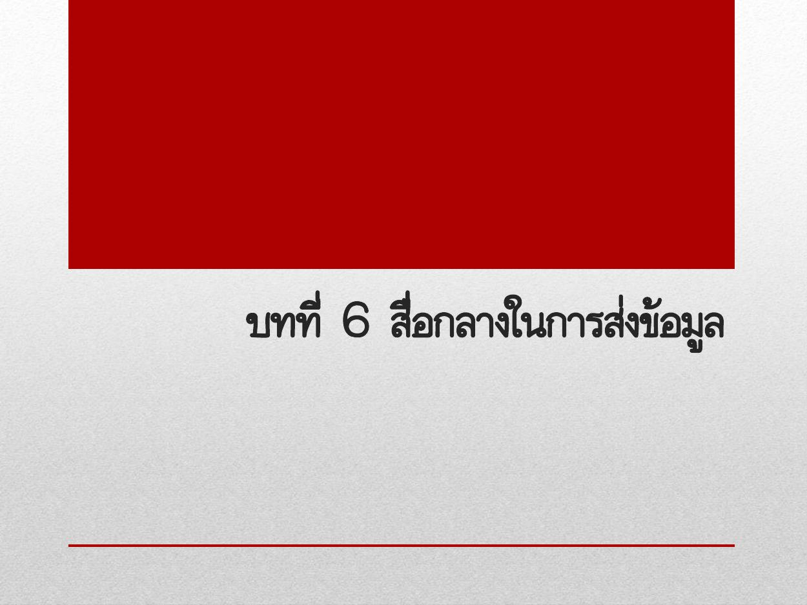
คลิกภาพเพื่อเปิดขยาย
บทที่ 6 สื่อกลางในการส่งข้อมูล
ทบทวนภาษาไทย: สื่อกลางส่งข้อมูล
กลับสารบัญ ↑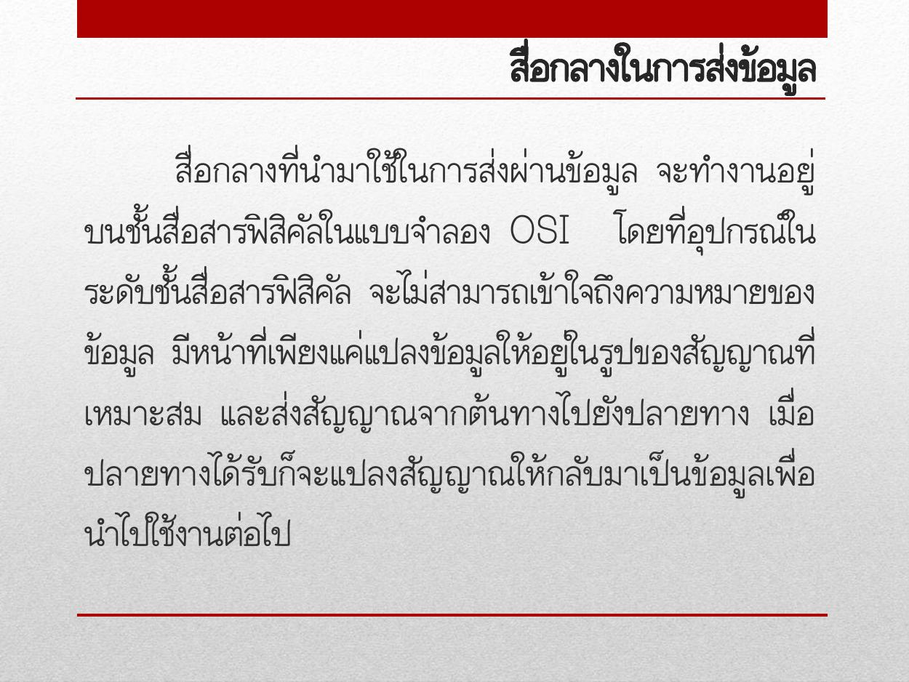
คลิกภาพเพื่อเปิดขยาย
สื่อกลางในการส่งข้อมูล
สื่อกลางที่นามาใช้ในการส่งผ่านข้อมูล จะทางานอยู่
บนชั้นสื่อสารฟิสิคัลในแบบจาลอง OSI โดยที่อุปกรณ์ใน
ระดับชั้นสื่อสารฟิสิคัล จะไม่สามารถเข้าใจถึงความหมายของ
ข้อมูล มีหน้าที่เพียงแค่แปลงข้อมูลให้อยู่ในรูปของสัญญาณที่
เหมาะสม และส่งสัญญาณจากต้นทางไปยังปลายทาง เมื่อ
ปลายทางได้รับก็จะแปลงสัญญาณให้กลับมาเป็นข้อมูลเพื่อ
นาไปใช้งานต่อไปทบทวนภาษาไทย: สื่อกลางส่งข้อมูล
กลับสารบัญ ↑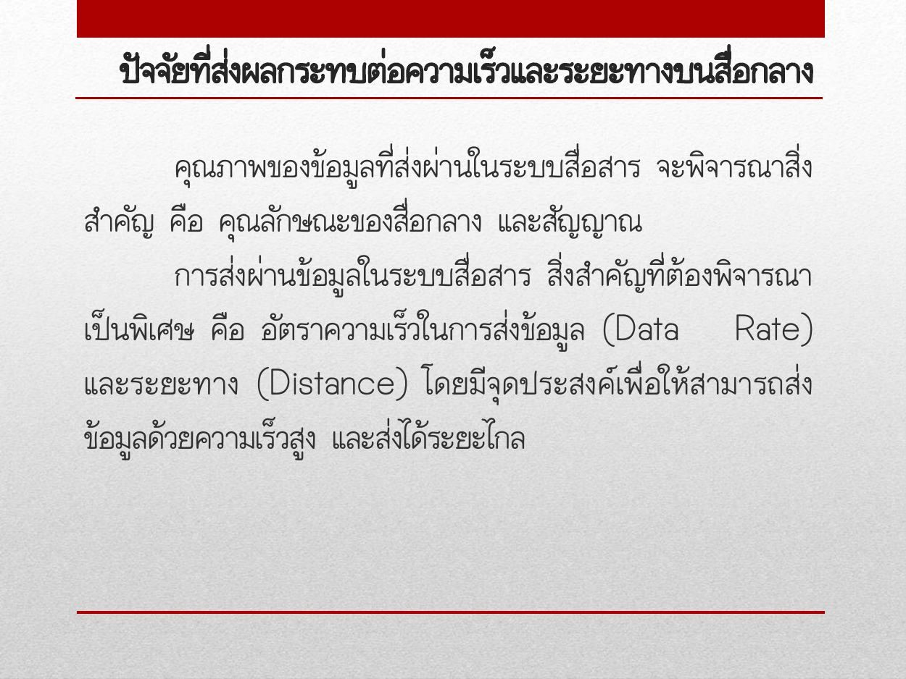
คลิกภาพเพื่อเปิดขยาย
ปัจจัยทีส่ ง่ ผลกระทบต่อความเร็วและระยะทางบนสือ่ กลาง
คุณภาพของข้อมูลที่ส่งผ่านในระบบสื่อสาร จะพิจารณาสิ่ง
สาคัญ คือ คุณลักษณะของสื่อกลาง และสัญญาณ
การส่งผ่านข้อมูลในระบบสื่อสาร สิ่งสาคัญที่ต้องพิจารณา
เป็นพิเศษ คือ อัตราความเร็วในการส่งข้อมูล (Data Rate)
และระยะทาง (Distance) โดยมีจุดประสงค์เพื่อให้สามารถส่ง
ข้อมูลด้วยความเร็วสูง และส่งได้ระยะไกลทบทวนภาษาไทย: สื่อกลางส่งข้อมูล
กลับสารบัญ ↑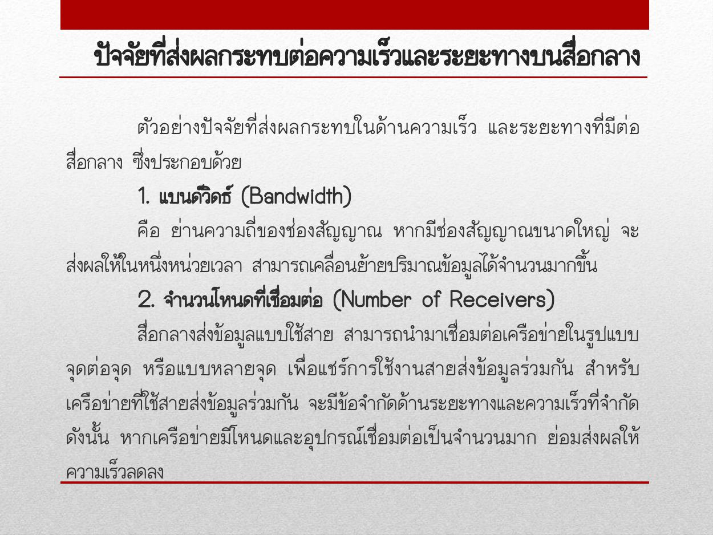
คลิกภาพเพื่อเปิดขยาย
ปัจจัยทีส่ ง่ ผลกระทบต่อความเร็วและระยะทางบนสือ่ กลาง
ตั ว อย่ า งปั จ จั ย ที่ ส่ ง ผลกระทบในด้ า นความเร็ ว และระยะทางที่ มี ต่ อ
สื่อกลาง ซึ่งประกอบด้วย
1. แบนด์วิดธ์ (Bandwidth)
คือ ย่านความถี่ของช่องสัญญาณ หากมีช่องสัญญาณขนาดใหญ่ จะ
ส่งผลให้ในหนึ่งหน่วยเวลา สามารถเคลื่อนย้ายปริมาณข้อมูลได้จานวนมากขึ้น
2. จานวนโหนดที่เชื่อมต่อ (Number of Receivers)
สื่อกลางส่งข้อมูลแบบใช้สาย สามารถนามาเชื่อมต่อเครือข่ายในรูปแบบ
จุ ด ต่ อ จุ ด หรื อ แบบหลายจุ ด เพื่ อ แชร์ ก ารใช้ ง านสายส่ ง ข้ อ มู ล ร่ ว มกั น ส าหรั บ
เครือข่ายที่ใช้สายส่งข้อมูลร่วมกัน จะมีข้อจากัดด้านระยะทางและความเร็วที่จากัด
ดังนั้น หากเครือข่ายมีโหนดและอุปกรณ์เชื่อมต่อเป็นจานวนมาก ย่อมส่งผลให้
ความเร็วลดลงทบทวนภาษาไทย: สื่อกลางส่งข้อมูล
กลับสารบัญ ↑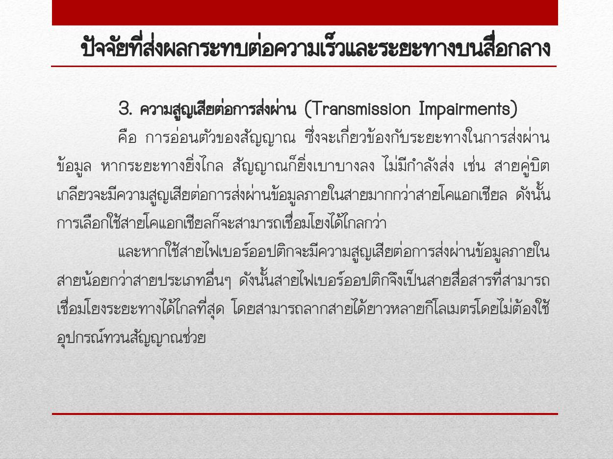
คลิกภาพเพื่อเปิดขยาย
ปัจจัยทีส่ ง่ ผลกระทบต่อความเร็วและระยะทางบนสือ่ กลาง
3. ความสูญเสียต่อการส่งผ่าน (Transmission Impairments)
คือ การอ่อนตัวของสัญญาณ ซึ่งจะเกี่ยวข้องกับระยะทางในการส่งผ่าน
ข้อมูล หากระยะทางยิ่งไกล สัญญาณก็ยิ่งเบาบางลง ไม่มีกาลังส่ง เช่น สายคู่บิต
เกลียวจะมีความสูญเสียต่อการส่งผ่านข้อมูลภายในสายมากกว่าสายโคแอกเชียล ดังนั้น
การเลือกใช้สายโคแอกเชียลก็จะสามารถเชื่อมโยงได้ไกลกว่า
และหากใช้สายไฟเบอร์ออปติกจะมีความสูญเสียต่อการส่งผ่านข้อมูลภายใน
สายน้อยกว่าสายประเภทอื่นๆ ดังนั้นสายไฟเบอร์ออปติกจึงเป็นสายสื่อสารที่สามารถ
เชื่อมโยงระยะทางได้ไกลที่สุด โดยสามารถลากสายได้ยาวหลายกิโลเมตรโดยไม่ต้องใช้
อุปกรณ์ทวนสัญญาณช่วยทบทวนภาษาไทย: สื่อกลางส่งข้อมูล
กลับสารบัญ ↑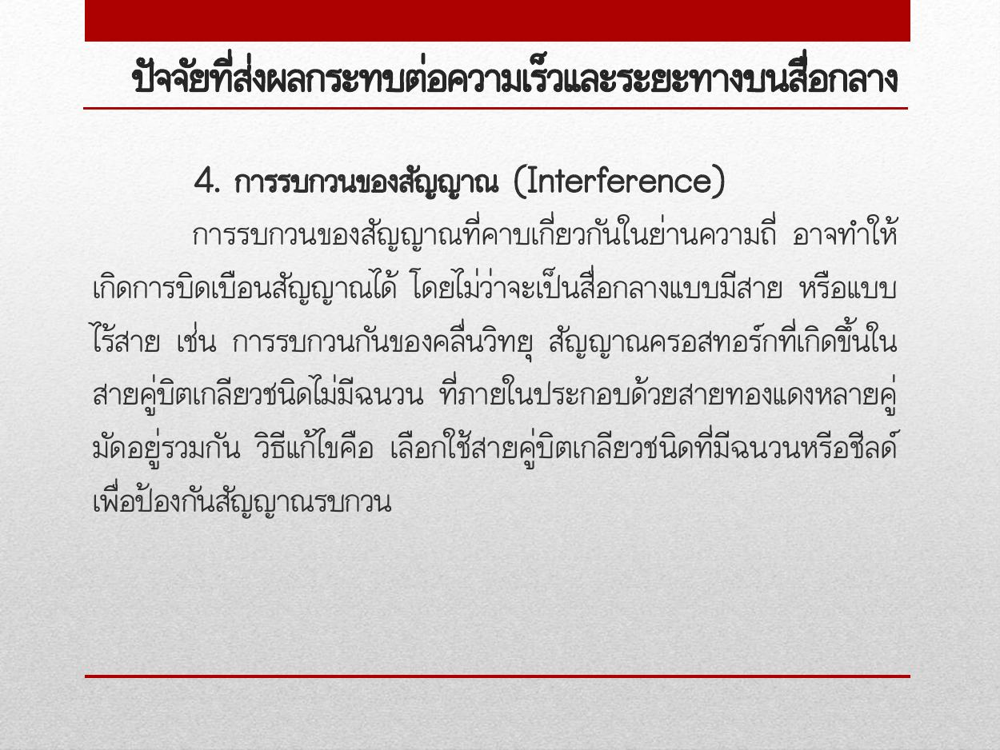
คลิกภาพเพื่อเปิดขยาย
ปัจจัยทีส่ ง่ ผลกระทบต่อความเร็วและระยะทางบนสือ่ กลาง
4. การรบกวนของสัญญาณ (Interference)
การรบกวนของสัญญาณที่คาบเกี่ยวกันในย่านความถี่ อาจทาให้
เกิดการบิดเบือนสัญญาณได้ โดยไม่ว่าจะเป็นสื่อกลางแบบมีสาย หรือแบบ
ไร้สาย เช่น การรบกวนกันของคลื่นวิทยุ สัญญาณครอสทอร์กที่เกิดขึ้นใน
สายคู่บิตเกลียวชนิดไม่มีฉนวน ที่ภายในประกอบด้วยสายทองแดงหลายคู่
มัดอยู่รวมกัน วิธีแก้ไขคือ เลือกใช้สายคู่บิตเกลียวชนิดที่มีฉนวนหรีอชีลด์
เพื่อป้องกันสัญญาณรบกวนทบทวนภาษาไทย: สื่อกลางส่งข้อมูล
กลับสารบัญ ↑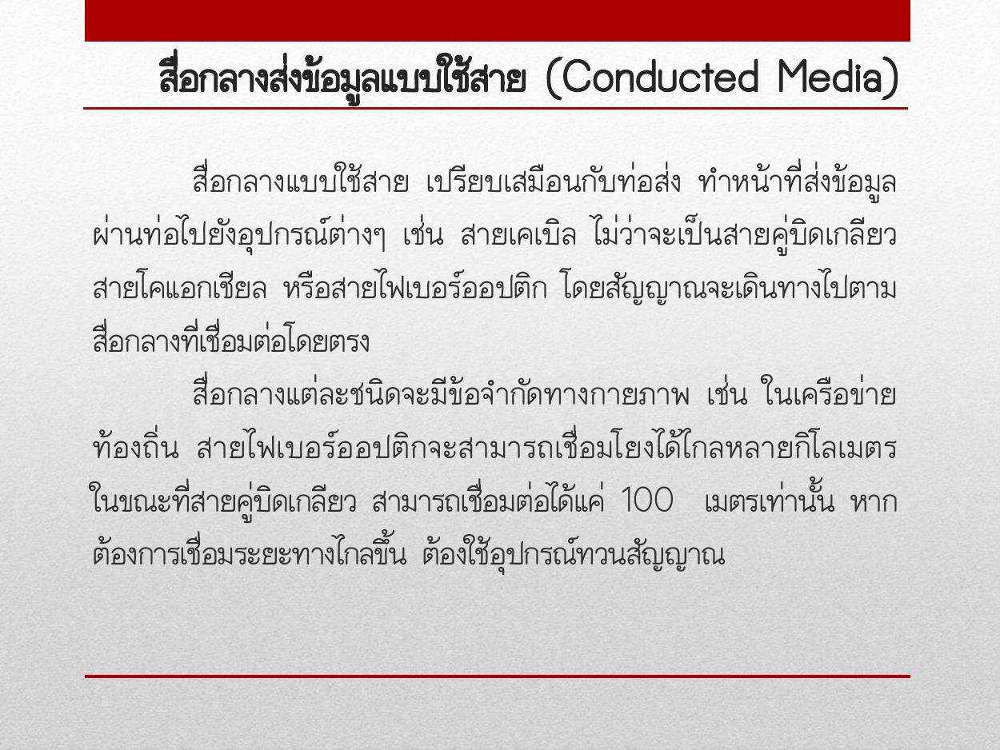
คลิกภาพเพื่อเปิดขยาย
สือ่ กลางส่งข้อมูลแบบใช้สาย (Conducted Media)
สื่อกลางแบบใช้สาย เปรียบเสมือนกับท่อส่ง ทาหน้าที่ส่งข้อมูล
ผ่านท่อไปยังอุปกรณ์ต่างๆ เช่น สายเคเบิล ไม่ว่าจะเป็นสายคู่บิดเกลียว
สายโคแอกเชียล หรือสายไฟเบอร์ออปติก โดยสัญญาณจะเดินทางไปตาม
สื่อกลางที่เชื่อมต่อโดยตรง
สื่อกลางแต่ละชนิดจะมีข้อจากัดทางกายภาพ เช่น ในเครือข่าย
ท้อ งถิ่ น สายไฟเบอร์อ อปติ ก จะสามารถเชื่อ มโยงได้ ไ กลหลายกิโ ลเมตร
ในขณะที่สายคู่บิดเกลียว สามารถเชื่อมต่อได้แค่ 100 เมตรเท่านั้น หาก
ต้องการเชื่อมระยะทางไกลขึ้น ต้องใช้อุปกรณ์ทวนสัญญาณทบทวนภาษาไทย: สื่อกลางส่งข้อมูล
กลับสารบัญ ↑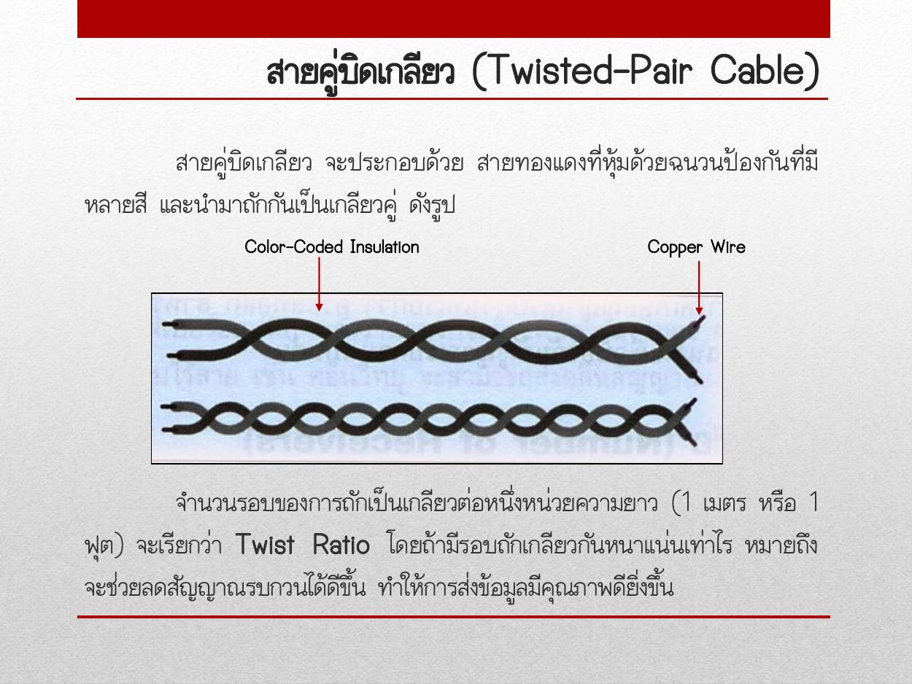
คลิกภาพเพื่อเปิดขยาย
สายคูบ่ ิดเกลียว (Twisted-Pair Cable)
สายคู่บิดเกลียว จะประกอบด้วย สายทองแดงที่หุ้มด้วยฉนวนป้องกันที่มี
หลายสี และนามาถักกันเป็นเกลียวคู่ ดังรูป
Color-Coded Insulation Copper Wire
จานวนรอบของการถักเป็นเกลียวต่อหนึ่งหน่วยความยาว (1 เมตร หรือ 1
ฟุต) จะเรียกว่า Twist Ratio โดยถ้ามีรอบถักเกลียวกันหนาแน่นเท่าไร หมายถึง
จะช่วยลดสัญญาณรบกวนได้ดีขึ้น ทาให้การส่งข้อมูลมีคุณภาพดียิ่งขึ้นทบทวนภาษาไทย: สื่อกลางส่งข้อมูล
กลับสารบัญ ↑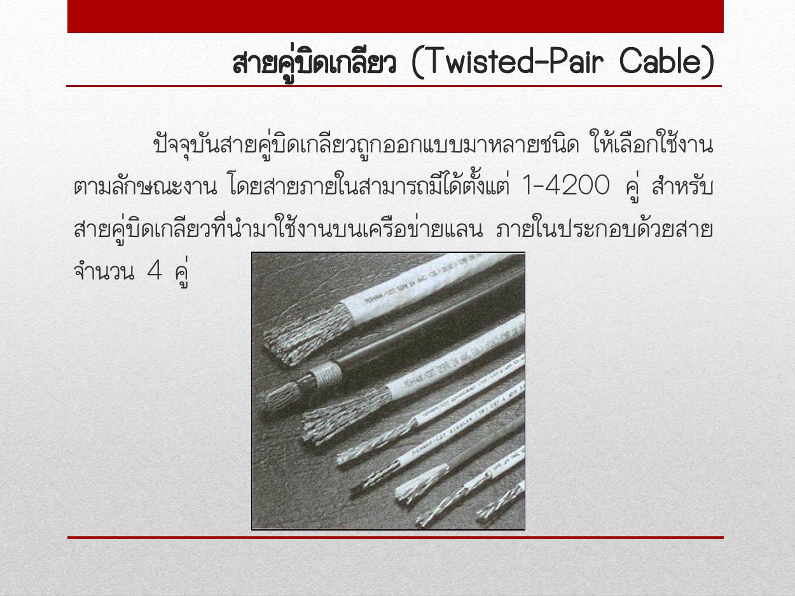
คลิกภาพเพื่อเปิดขยาย
สายคูบ่ ิดเกลียว (Twisted-Pair Cable)
ปัจจุบันสายคู่บิดเกลียวถูกออกแบบมาหลายชนิด ให้เลือกใช้งาน
ตามลักษณะงาน โดยสายภายในสามารถมีได้ตั้งแต่ 1-4200 คู่ สาหรับ
สายคู่บิดเกลียวที่นามาใช้งานบนเครือข่ายแลน ภายในประกอบด้วยสาย
จานวน 4 คู่ทบทวนภาษาไทย: สื่อกลางส่งข้อมูล
กลับสารบัญ ↑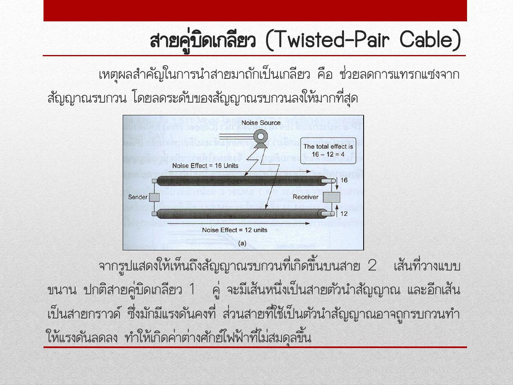
คลิกภาพเพื่อเปิดขยาย
สายคูบ่ ิดเกลียว (Twisted-Pair Cable)
เหตุผลสาคัญในการนาสายมาถักเป็นเกลียว คือ ช่วยลดการแทรกแซงจาก
สัญญาณรบกวน โดยลดระดับของสัญญาณรบกวนลงให้มากที่สุด
จากรูปแสดงให้เห็นถึงสัญญาณรบกวนที่เกิดขึ้นบนสาย 2 เส้นที่วางแบบ
ขนาน ปกติสายคู่บิดเกลียว 1 คู่ จะมีเส้นหนึ่งเป็นสายตัวนาสัญญาณ และอีกเส้น
เป็นสายกราวด์ ซึ่งมักมีแรงดันคงที่ ส่วนสายที่ใช้เป็นตัวนาสัญญาณอาจถูกรบกวนทา
ให้แรงดันลดลง ทาให้เกิดค่าต่างศักย์ไฟฟ้าที่ไม่สมดุลขึ้นทบทวนภาษาไทย: สื่อกลางส่งข้อมูล
กลับสารบัญ ↑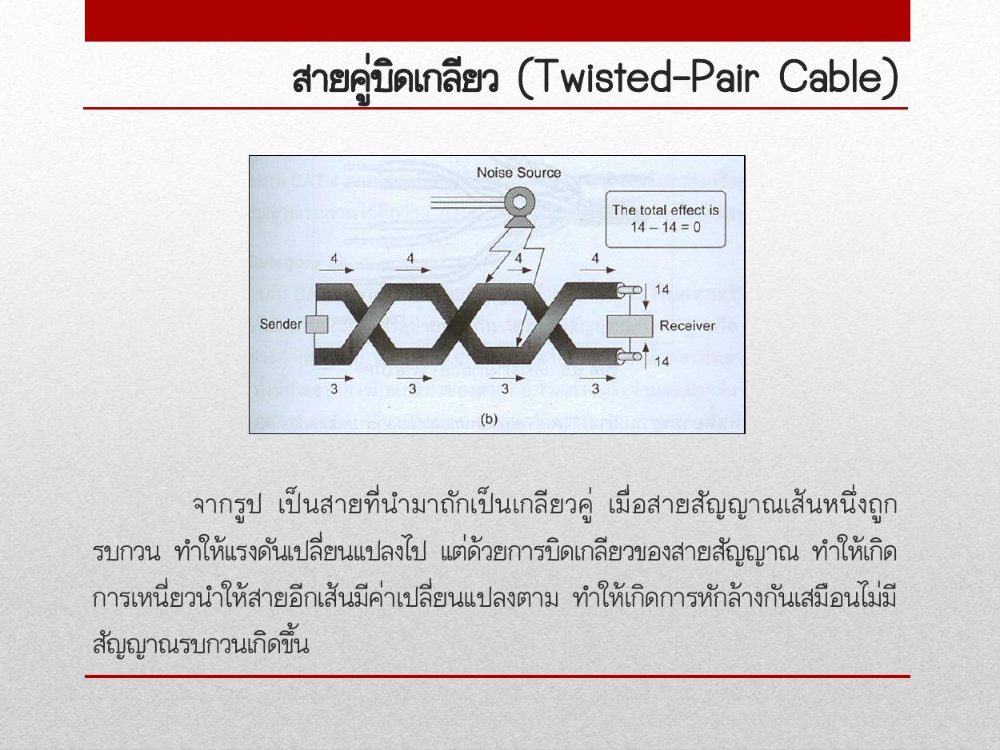
คลิกภาพเพื่อเปิดขยาย
สายคูบ่ ิดเกลียว (Twisted-Pair Cable)
จากรู ป เป็ น สายที่ น ามาถั ก เป็ น เกลี ย วคู่ เมื่ อ สายสั ญ ญาณเส้ น หนึ่ ง ถู ก
รบกวน ทาให้แรงดันเปลี่ยนแปลงไป แต่ด้วยการบิดเกลียวของสายสัญญาณ ทาให้เกิด
การเหนี่ยวนาให้สายอีกเส้นมีค่าเปลี่ยนแปลงตาม ทาให้เกิดการหักล้างกันเสมือนไม่มี
สัญญาณรบกวนเกิดขึ้นทบทวนภาษาไทย: สื่อกลางส่งข้อมูล
กลับสารบัญ ↑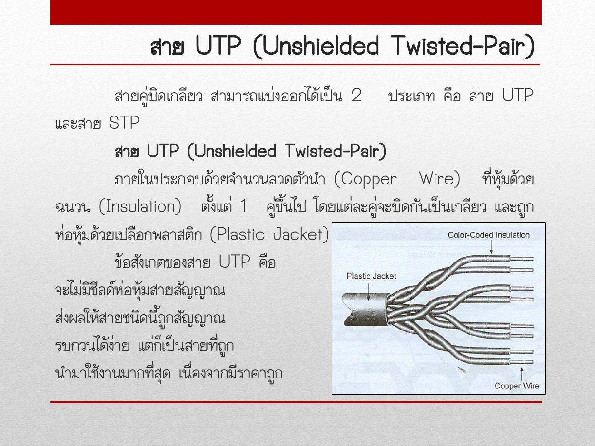
คลิกภาพเพื่อเปิดขยาย
สาย UTP (Unshielded Twisted-Pair)
สายคู่บิดเกลียว สามารถแบ่งออกได้เป็น 2 ประเภท คือ สาย UTP
และสาย STP
สาย UTP (Unshielded Twisted-Pair)
ภายในประกอบด้วยจานวนลวดตัวนา (Copper Wire) ที่หุ้มด้วย
ฉนวน (Insulation) ตั้งแต่ 1 คู่ขึ้นไป โดยแต่ละคู่จะบิดกันเป็นเกลียว และถูก
ห่อหุ้มด้วยเปลือกพลาสติก (Plastic Jacket)
ข้อสังเกตของสาย UTP คือ
จะไม่มีชีลด์ห่อหุ้มสายสัญญาณ
ส่งผลให้สายชนิดนี้ถูกสัญญาณ
รบกวนได้ง่าย แต่ก็เป็นสายที่ถูก
นามาใช้งานมากที่สุด เนื่องจากมีราคาถูกทบทวนภาษาไทย: สื่อกลางส่งข้อมูล
กลับสารบัญ ↑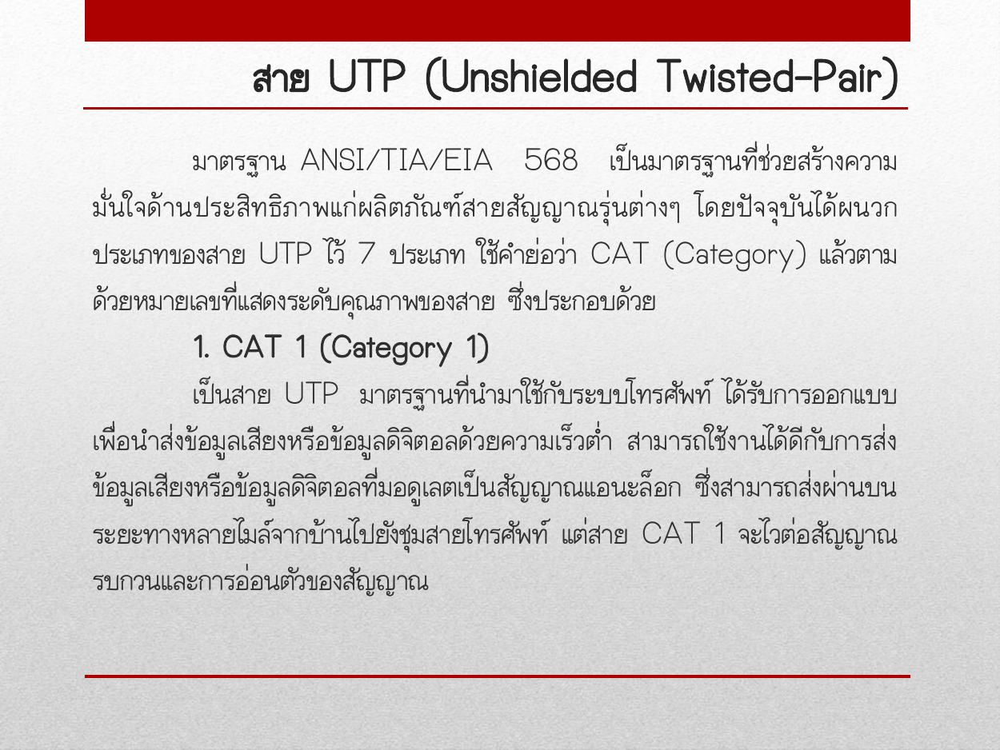
คลิกภาพเพื่อเปิดขยาย
สาย UTP (Unshielded Twisted-Pair)
มาตรฐาน ANSI/TIA/EIA 568 เป็นมาตรฐานที่ช่วยสร้างความ
มั่ น ใจด้ า นประสิ ท ธิ ภ าพแก่ ผ ลิ ต ภั ณ ฑ์ ส ายสั ญ ญาณรุ่ น ต่ า งๆ โดยปั จ จุ บั น ได้ ผ นวก
ประเภทของสาย UTP ไว้ 7 ประเภท ใช้คาย่อว่า CAT (Category) แล้วตาม
ด้วยหมายเลขที่แสดงระดับคุณภาพของสาย ซึ่งประกอบด้วย
1. CAT 1 (Category 1)
เป็นสาย UTP มาตรฐานที่นามาใช้กับระบบโทรศัพท์ ได้รับการออกแบบ
เพื่อนาส่งข้อมูลเสียงหรือข้อมูลดิจิตอลด้วยความเร็วต่า สามารถใช้งานได้ดีกับการส่ง
ข้อมูลเสียงหรือข้อมูลดิจิตอลที่มอดูเลตเป็นสัญญาณแอนะล็อก ซึ่งสามารถส่งผ่านบน
ระยะทางหลายไมล์จากบ้านไปยังชุมสายโทรศัพท์ แต่สาย CAT 1 จะไวต่อสัญญาณ
รบกวนและการอ่อนตัวของสัญญาณทบทวนภาษาไทย: สื่อกลางส่งข้อมูล
กลับสารบัญ ↑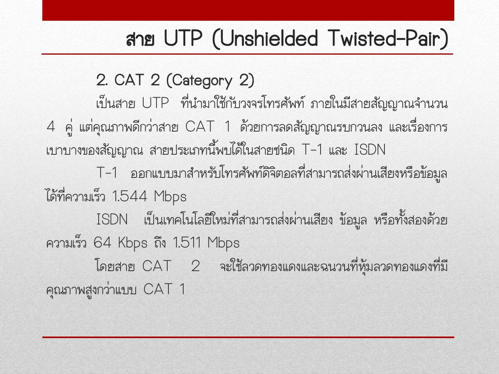
คลิกภาพเพื่อเปิดขยาย
สาย UTP (Unshielded Twisted-Pair)
2. CAT 2 (Category 2)
เป็นสาย UTP ที่นามาใช้กับวงจรโทรศัพท์ ภายในมีสายสัญญาณจานวน
4 คู่ แต่คุณภาพดีกว่าสาย CAT 1 ด้วยการลดสัญญาณรบกวนลง และเรื่องการ
เบาบางของสัญญาณ สายประเภทนี้พบได้ในสายชนิด T-1 และ ISDN
T-1 ออกแบบมาสาหรับโทรศัพท์ดิจิตอลที่สามารถส่งผ่านเสียงหรือข้อมูล
ได้ที่ความเร็ว 1.544 Mbps
ISDN เป็นเทคโนโลยีใหม่ที่สามารถส่งผ่านเสียง ข้อมูล หรือทั้งสองด้วย
ความเร็ว 64 Kbps ถึง 1.511 Mbps
โดยสาย CAT 2 จะใช้ลวดทองแดงและฉนวนที่หุ้มลวดทองแดงที่มี
คุณภาพสูงกว่าแบบ CAT 1ทบทวนภาษาไทย: สื่อกลางส่งข้อมูล
กลับสารบัญ ↑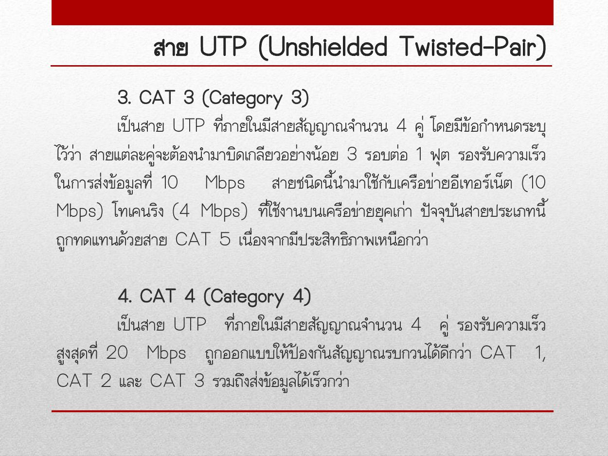
คลิกภาพเพื่อเปิดขยาย
สาย UTP (Unshielded Twisted-Pair)
3. CAT 3 (Category 3)
เป็นสาย UTP ที่ภายในมีสายสัญญาณจานวน 4 คู่ โดยมีข้อกาหนดระบุ
ไว้ว่า สายแต่ละคู่จะต้องนามาบิดเกลียวอย่างน้อย 3 รอบต่อ 1 ฟุต รองรับความเร็ว
ในการส่งข้อมูลที่ 10 Mbps สายชนิดนี้นามาใช้กับเครือข่ายอีเทอร์เน็ต (10
Mbps) โทเคนริง (4 Mbps) ที่ใช้งานบนเครือข่ายยุคเก่า ปัจจุบันสายประเภทนี้
ถูกทดแทนด้วยสาย CAT 5 เนื่องจากมีประสิทธิภาพเหนือกว่า
4. CAT 4 (Category 4)
เป็นสาย UTP ที่ภายในมีสายสัญญาณจานวน 4 คู่ รองรับความเร็ว
สูงสุดที่ 20 Mbps ถูกออกแบบให้ป้องกันสัญญาณรบกวนได้ดีกว่า CAT 1,
CAT 2 และ CAT 3 รวมถึงส่งข้อมูลได้เร็วกว่าทบทวนภาษาไทย: สื่อกลางส่งข้อมูล
กลับสารบัญ ↑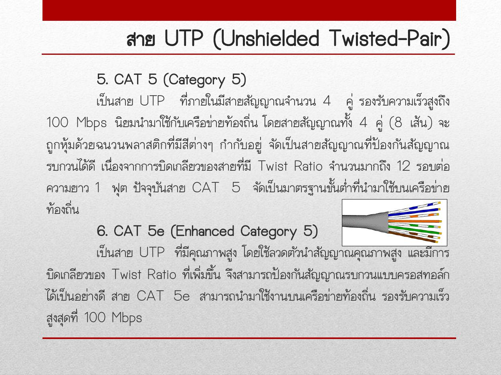
คลิกภาพเพื่อเปิดขยาย
สาย UTP (Unshielded Twisted-Pair)
5. CAT 5 (Category 5)
เป็นสาย UTP ที่ภายในมีสายสัญญาณจานวน 4 คู่ รองรับความเร็วสูงถึง
100 Mbps นิยมนามาใช้กับเครือข่ายท้องถิ่น โดยสายสัญญาณทั้ง 4 คู่ (8 เส้น) จะ
ถูกหุ้มด้ วยฉนวนพลาสติกที่มีสี ต่างๆ กากับอยู่ จัดเป็นสายสัญญาณที่ป้องกั นสัญญาณ
รบกวนได้ดี เนื่องจากการบิดเกลียวของสายที่มี Twist Ratio จานวนมากถึง 12 รอบต่อ
ความยาว 1 ฟุต ปัจจุบันสาย CAT 5 จัดเป็นมาตรฐานขั้นต่าที่นามาใช้บนเครือข่าย
ท้องถิ่น
6. CAT 5e (Enhanced Category 5)
เป็นสาย UTP ที่มีคุณภาพสูง โดยใช้ลวดตัวนาสัญญาณคุณภาพสูง และมีการ
บิดเกลียวของ Twist Ratio ที่เพิ่มขึ้น จึงสามารถป้องกันสัญญาณรบกวนแบบครอสทอล์ก
ได้เป็นอย่างดี สาย CAT 5e สามารถนามาใช้งานบนเครือข่ายท้องถิ่น รองรับความเร็ว
สูงสุดที่ 100 Mbpsทบทวนภาษาไทย: สื่อกลางส่งข้อมูล
กลับสารบัญ ↑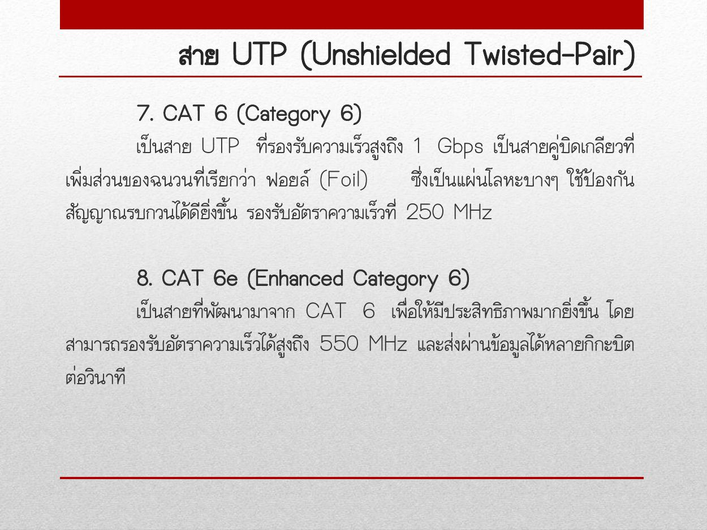
คลิกภาพเพื่อเปิดขยาย
สาย UTP (Unshielded Twisted-Pair)
7. CAT 6 (Category 6)
เป็นสาย UTP ที่รองรับความเร็วสูงถึง 1 Gbps เป็นสายคู่บิดเกลียวที่
เพิ่มส่วนของฉนวนที่เรียกว่า ฟอยล์ (Foil) ซึ่งเป็นแผ่นโลหะบางๆ ใช้ป้องกัน
สัญญาณรบกวนได้ดียิ่งขึ้น รองรับอัตราความเร็วที่ 250 MHz
8. CAT 6e (Enhanced Category 6)
เป็นสายที่พัฒนามาจาก CAT 6 เพื่อให้มีประสิทธิภาพมากยิ่งขึ้น โดย
สามารถรองรับอัตราความเร็วได้สูงถึง 550 MHz และส่งผ่านข้อมูลได้หลายกิกะบิต
ต่อวินาทีทบทวนภาษาไทย: สื่อกลางส่งข้อมูล
กลับสารบัญ ↑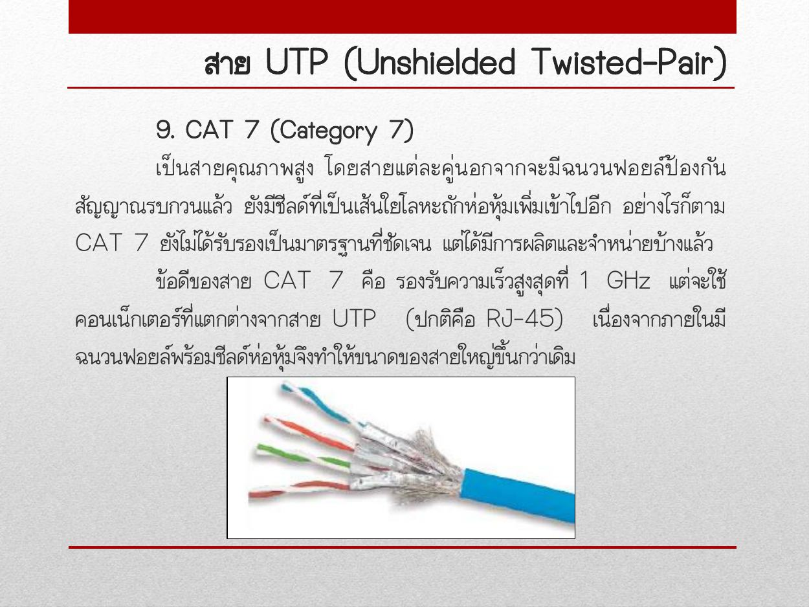
คลิกภาพเพื่อเปิดขยาย
สาย UTP (Unshielded Twisted-Pair)
9. CAT 7 (Category 7)
เป็ น สายคุ ณ ภาพสู ง โดยสายแต่ ล ะคู่ น อกจากจะมี ฉ นวนฟอยล์ ป้ อ งกั น
สัญญาณรบกวนแล้ว ยังมีชีลด์ที่เป็นเส้นใยโลหะถักห่อหุ้มเพิ่มเข้าไปอีก อย่างไรก็ตาม
CAT 7 ยังไม่ได้รับรองเป็นมาตรฐานที่ชัดเจน แต่ได้มีการผลิตและจาหน่ายบ้างแล้ว
ข้อดีของสาย CAT 7 คือ รองรับความเร็วสูงสุดที่ 1 GHz แต่จะใช้
คอนเน็กเตอร์ที่แตกต่างจากสาย UTP (ปกติคือ RJ-45) เนื่องจากภายในมี
ฉนวนฟอยล์พร้อมชีลด์ห่อหุ้มจึงทาให้ขนาดของสายใหญ่ขึ้นกว่าเดิมทบทวนภาษาไทย: สื่อกลางส่งข้อมูล
กลับสารบัญ ↑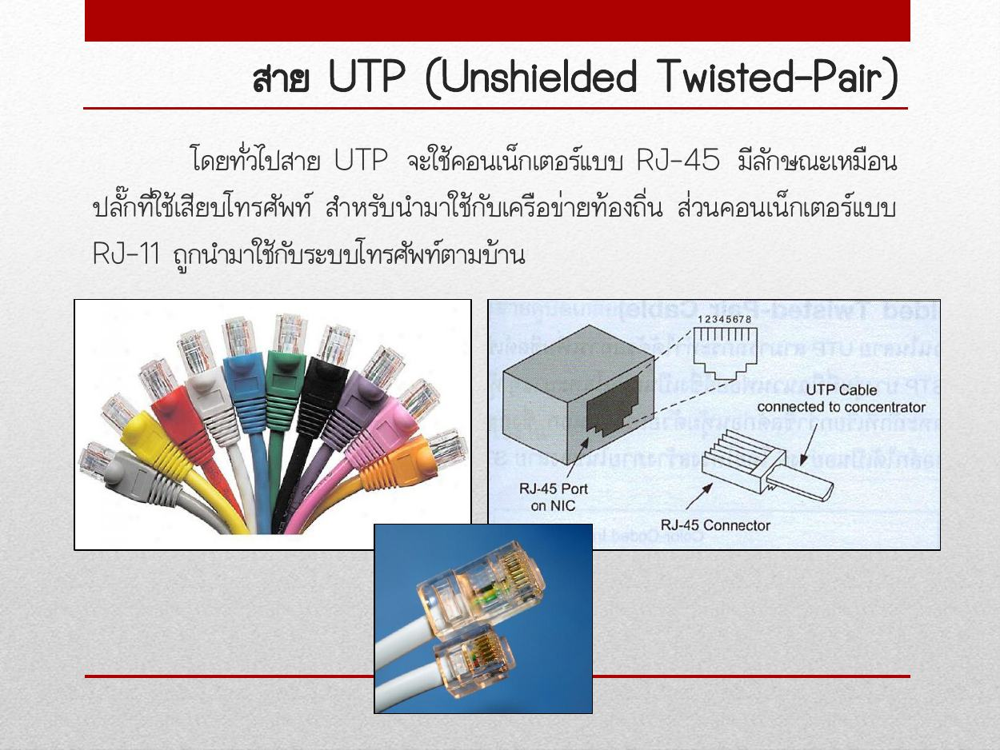
คลิกภาพเพื่อเปิดขยาย
สาย UTP (Unshielded Twisted-Pair)
โดยทั่วไปสาย UTP จะใช้คอนเน็กเตอร์แบบ RJ-45 มีลักษณะเหมือน
ปลั๊กที่ใช้เสียบโทรศัพท์ สาหรับนามาใช้กับเครือข่ายท้องถิ่น ส่วนคอนเน็กเตอร์แบบ
RJ-11 ถูกนามาใช้กับระบบโทรศัพท์ตามบ้านทบทวนภาษาไทย: สื่อกลางส่งข้อมูล
กลับสารบัญ ↑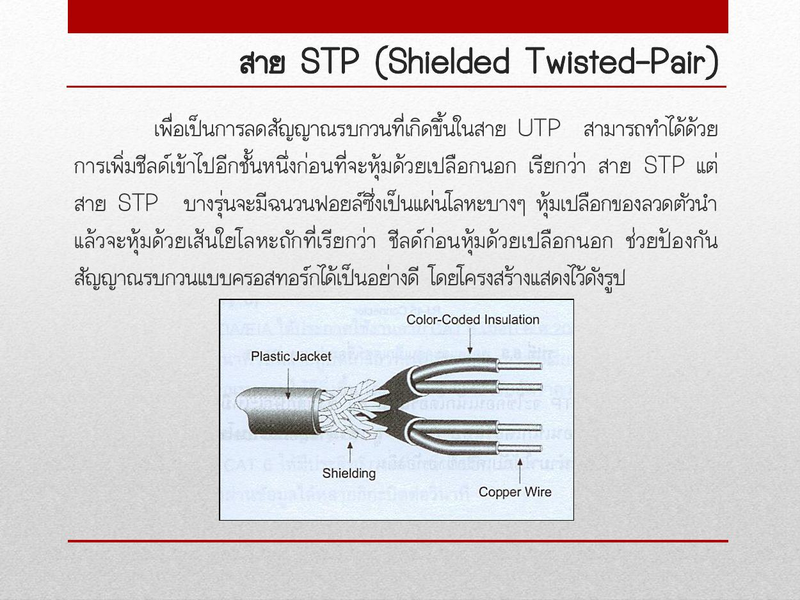
คลิกภาพเพื่อเปิดขยาย
สาย STP (Shielded Twisted-Pair)
เพื่อเป็นการลดสัญญาณรบกวนที่เกิดขึ้นในสาย UTP สามารถทาได้ด้วย
การเพิ่มชีลด์เข้าไปอีกชั้นหนึ่งก่อนที่จะหุ้มด้วยเปลือกนอก เรียกว่า สาย STP แต่
สาย STP บางรุ่นจะมีฉนวนฟอยล์ซึ่งเป็นแผ่นโลหะบางๆ หุ้มเปลือกของลวดตัวนา
แล้ วจะหุ้ มด้วยเส้น ใยโลหะถักที่เรียกว่า ชีล ด์ก่อนหุ้มด้วยเปลือกนอก ช่วยป้ องกัน
สัญญาณรบกวนแบบครอสทอร์กได้เป็นอย่างดี โดยโครงสร้างแสดงไว้ดังรูปทบทวนภาษาไทย: สื่อกลางส่งข้อมูล
กลับสารบัญ ↑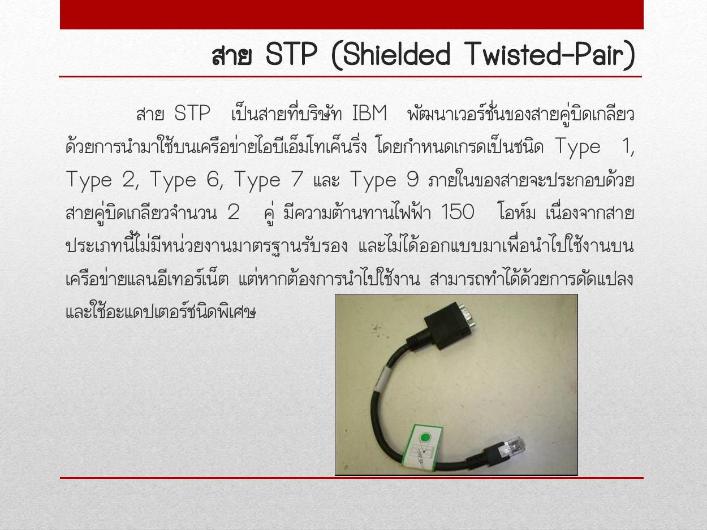
คลิกภาพเพื่อเปิดขยาย
สาย STP (Shielded Twisted-Pair)
สาย STP เป็นสายที่บริษัท IBM พัฒนาเวอร์ชั่นของสายคู่บิดเกลียว
ด้วยการนามาใช้บนเครือข่ายไอบีเอ็มโทเค็นริ่ง โดยกาหนดเกรดเป็นชนิด Type 1,
Type 2, Type 6, Type 7 และ Type 9 ภายในของสายจะประกอบด้วย
สายคู่บิดเกลียวจานวน 2 คู่ มีความต้านทานไฟฟ้า 150 โอห์ม เนื่องจากสาย
ประเภทนี้ไม่มีหน่วยงานมาตรฐานรับรอง และไม่ได้ออกแบบมาเพื่อนาไปใช้งานบน
เครือข่ายแลนอีเทอร์เน็ต แต่หากต้องการนาไปใช้งาน สามารถทาได้ด้วยการดัดแปลง
และใช้อะแดปเตอร์ชนิดพิเศษทบทวนภาษาไทย: สื่อกลางส่งข้อมูล
กลับสารบัญ ↑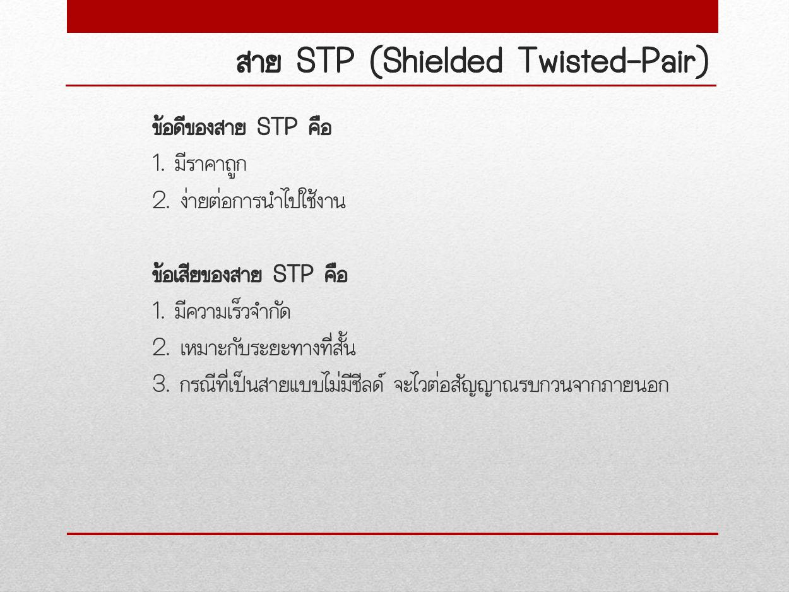
คลิกภาพเพื่อเปิดขยาย
สาย STP (Shielded Twisted-Pair) ข้อดีของสาย STP คือ 1. มีราคาถูก 2. ง่ายต่อการนาไปใช้งาน ข้อเสียของสาย STP คือ 1. มีความเร็วจากัด 2. เหมาะกับระยะทางที่สั้น 3. กรณีที่เป็นสายแบบไม่มีชีลด์ จะไวต่อสัญญาณรบกวนจากภายนอก
ทบทวนภาษาไทย: สื่อกลางส่งข้อมูล
กลับสารบัญ ↑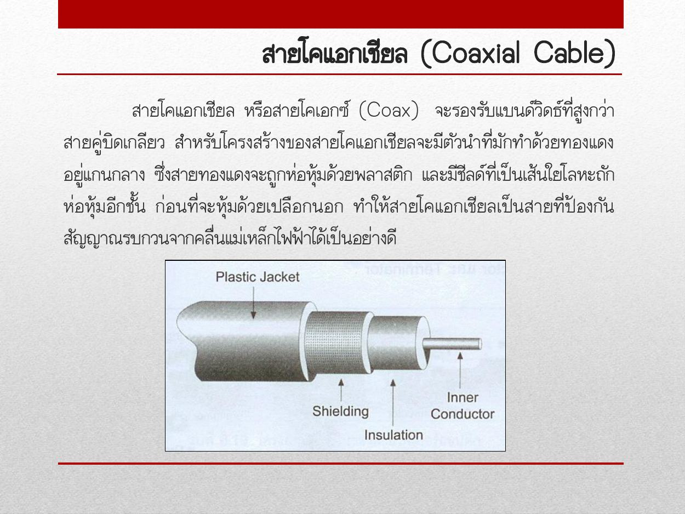
คลิกภาพเพื่อเปิดขยาย
สายโคแอกเชียล (Coaxial Cable)
สายโคแอกเชียล หรือสายโคเอกซ์ (Coax) จะรองรับแบนด์วิดธ์ที่สูงกว่า
สายคู่บิดเกลียว สาหรับโครงสร้างของสายโคแอกเชียลจะมีตัวนาที่มักทาด้วยทองแดง
อยู่แกนกลาง ซึ่งสายทองแดงจะถูกห่อหุ้มด้วยพลาสติก และมีชีลด์ที่เป็นเส้นใยโลหะถัก
ห่อหุ้มอีกชั้น ก่อนที่จะหุ้มด้วยเปลือกนอก ทาให้สายโคแอกเชียลเป็นสายที่ป้องกัน
สัญญาณรบกวนจากคลื่นแม่เหล็กไฟฟ้าได้เป็นอย่างดีทบทวนภาษาไทย: สื่อกลางส่งข้อมูล
กลับสารบัญ ↑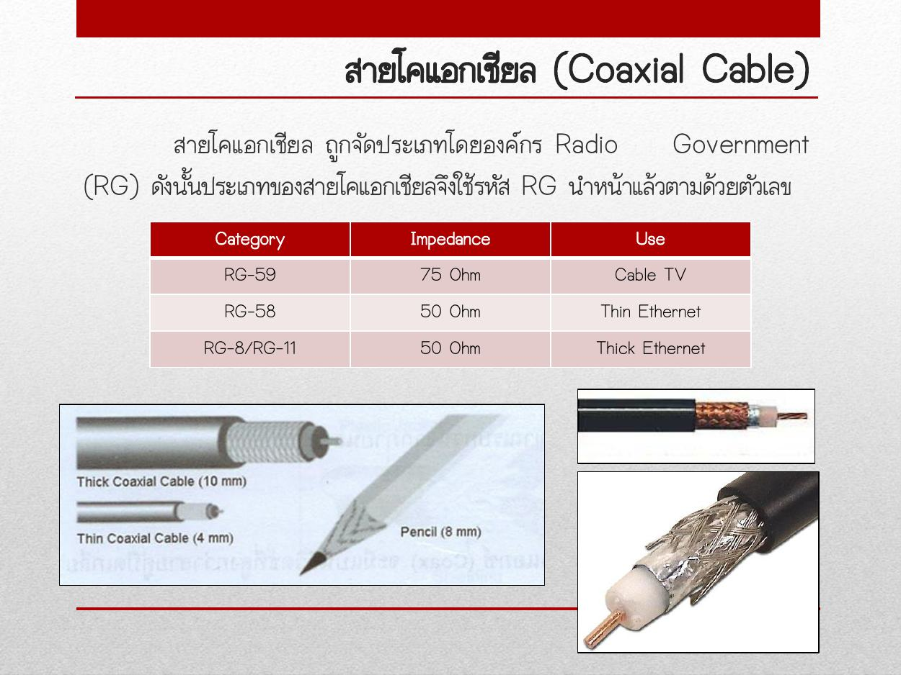
คลิกภาพเพื่อเปิดขยาย
สายโคแอกเชียล (Coaxial Cable)
สายโคแอกเชียล ถูกจัดประเภทโดยองค์กร Radio Government
(RG) ดังนั้นประเภทของสายโคแอกเชียลจึงใช้รหัส RG นาหน้าแล้วตามด้วยตัวเลข
Category Impedance Use
RG-59 75 Ohm Cable TV
RG-58 50 Ohm Thin Ethernet
RG-8/RG-11 50 Ohm Thick Ethernetทบทวนภาษาไทย: สื่อกลางส่งข้อมูล
กลับสารบัญ ↑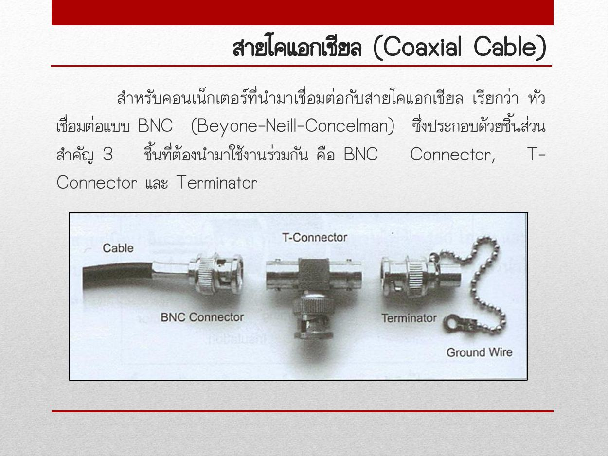
คลิกภาพเพื่อเปิดขยาย
สายโคแอกเชียล (Coaxial Cable)
ส าหรั บคอนเน็ ก เตอร์ที่ น ามาเชื่ อ มต่ อ กั บ สายโคแอกเชี ย ล เรี ย กว่ า หั ว
เชื่อมต่อแบบ BNC (Beyone-Neill-Concelman) ซึ่งประกอบด้วยชิ้นส่วน
สาคัญ 3 ชิ้นที่ต้องนามาใช้งานร่วมกัน คือ BNC Connector, T-
Connector และ Terminatorทบทวนภาษาไทย: สื่อกลางส่งข้อมูล
กลับสารบัญ ↑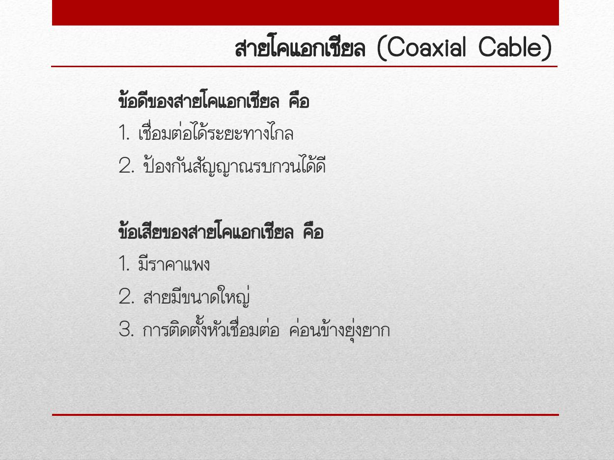
คลิกภาพเพื่อเปิดขยาย
สายโคแอกเชียล (Coaxial Cable) ข้อดีของสายโคแอกเชียล คือ 1. เชื่อมต่อได้ระยะทางไกล 2. ป้องกันสัญญาณรบกวนได้ดี ข้อเสียของสายโคแอกเชียล คือ 1. มีราคาแพง 2. สายมีขนาดใหญ่ 3. การติดตั้งหัวเชื่อมต่อ ค่อนข้างยุ่งยาก
ทบทวนภาษาไทย: สื่อกลางส่งข้อมูล
กลับสารบัญ ↑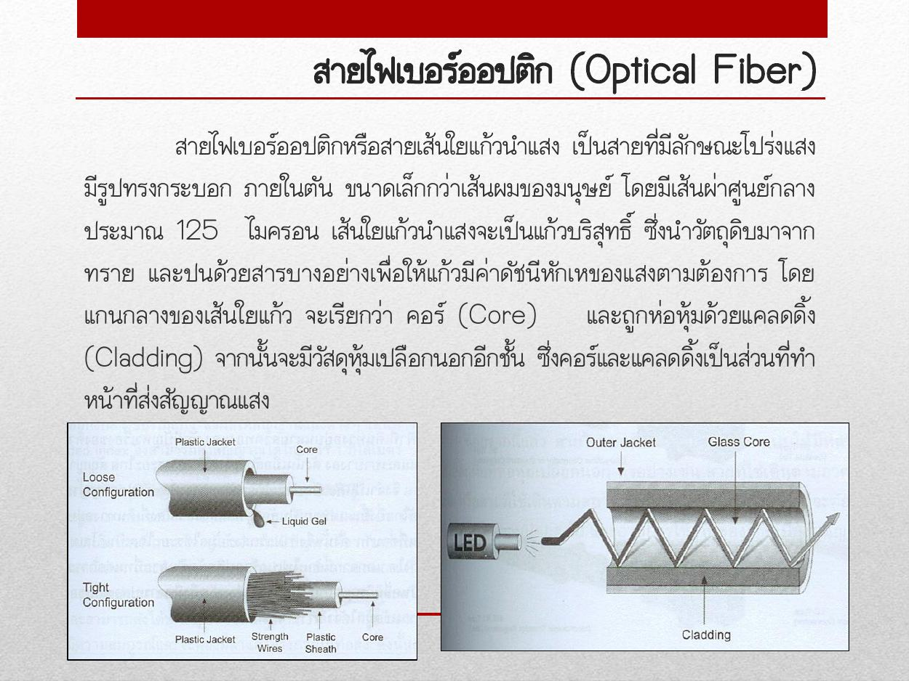
คลิกภาพเพื่อเปิดขยาย
สายไฟเบอร์ออปติก (Optical Fiber)
สายไฟเบอร์ออปติกหรือสายเส้นใยแก้วนาแสง เป็นสายที่มีลักษณะโปร่งแสง
มีรูปทรงกระบอก ภายในตัน ขนาดเล็กกว่าเส้นผมของมนุษย์ โดยมีเส้นผ่าศูนย์กลาง
ประมาณ 125 ไมครอน เส้นใยแก้วนาแสงจะเป็นแก้วบริสุทธิ์ ซึ่งนาวัตถุดิบมาจาก
ทราย และปนด้วยสารบางอย่างเพื่อให้แก้วมีค่าดัชนีหักเหของแสงตามต้องการ โดย
แกนกลางของเส้นใยแก้ว จะเรียกว่า คอร์ (Core) และถูกห่อหุ้มด้วยแคลดดิ้ง
(Cladding) จากนั้นจะมีวัสดุหุ้มเปลือกนอกอีกชั้น ซึ่งคอร์และแคลดดิ้งเป็นส่วนที่ทา
หน้าที่ส่งสัญญาณแสงทบทวนภาษาไทย: สื่อกลางส่งข้อมูล
กลับสารบัญ ↑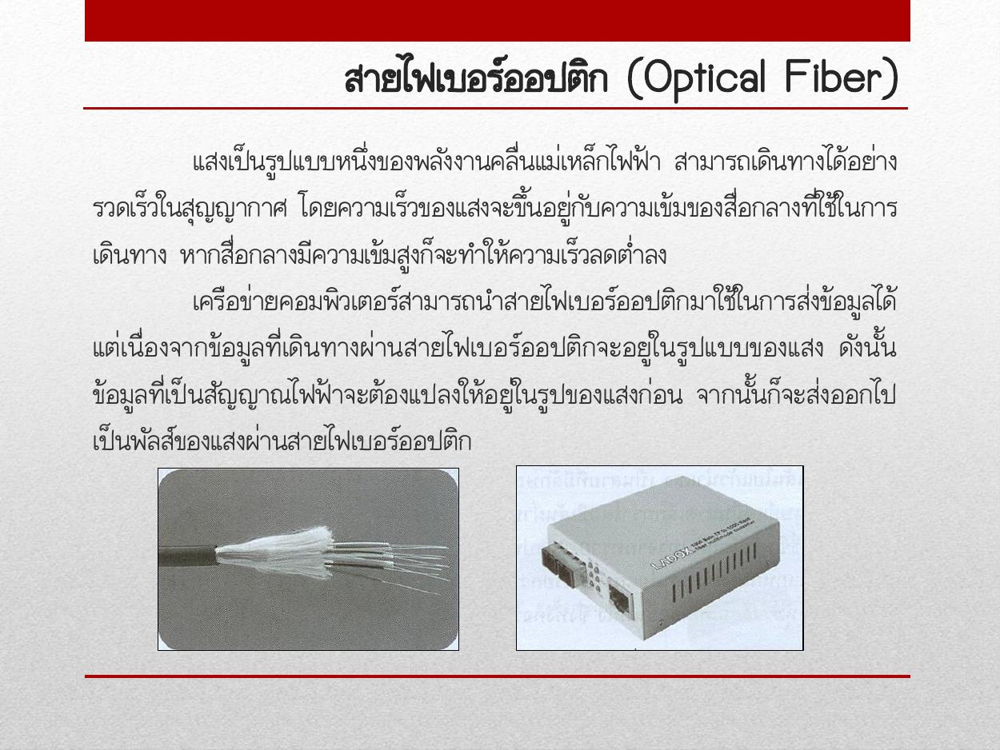
คลิกภาพเพื่อเปิดขยาย
สายไฟเบอร์ออปติก (Optical Fiber)
แสงเป็นรูปแบบหนึ่งของพลังงานคลื่นแม่เหล็กไฟฟ้า สามารถเดินทางได้อย่าง
รวดเร็วในสุญญากาศ โดยความเร็วของแสงจะขึ้นอยู่กับความเข้มของสื่อกลางที่ใช้ในการ
เดินทาง หากสื่อกลางมีความเข้มสูงก็จะทาให้ความเร็วลดต่าลง
เครือข่ายคอมพิวเตอร์สามารถนาสายไฟเบอร์ออปติกมาใช้ในการส่งข้อมูลได้
แต่เนื่องจากข้อมูลที่เดินทางผ่านสายไฟเบอร์ออปติกจะอยู่ในรูปแบบของแสง ดังนั้น
ข้อมูลที่เป็นสัญญาณไฟฟ้าจะต้องแปลงให้อยู่ในรูปของแสงก่อน จากนั้นก็จะส่งออกไป
เป็นพัลส์ของแสงผ่านสายไฟเบอร์ออปติกทบทวนภาษาไทย: สื่อกลางส่งข้อมูล
กลับสารบัญ ↑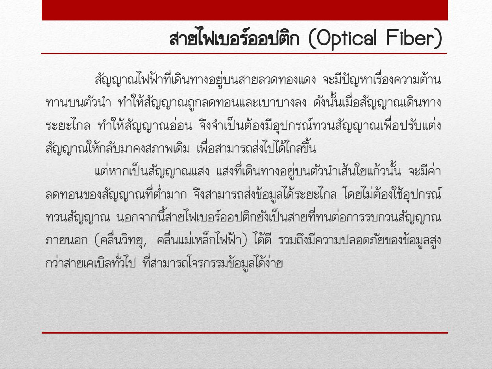
คลิกภาพเพื่อเปิดขยาย
สายไฟเบอร์ออปติก (Optical Fiber)
สัญญาณไฟฟ้าที่เดินทางอยู่บนสายลวดทองแดง จะมีปัญหาเรื่องความต้าน
ทานบนตัวนา ทาให้สัญญาณถูกลดทอนและเบาบางลง ดังนั้นเมื่อสัญญาณเดินทาง
ระยะไกล ทาให้สัญญาณอ่อน จึงจาเป็ นต้องมีอุปกรณ์ทวนสัญญาณเพื่อปรับแต่ ง
สัญญาณให้กลับมาคงสภาพเดิม เพื่อสามารถส่งไปได้ไกลขึ้น
แต่หากเป็นสัญญาณแสง แสงที่เดินทางอยู่บนตัวนาเส้นใยแก้วนั้น จะมีค่า
ลดทอนของสัญญาณที่ต่ามาก จึงสามารถส่งข้อมูลได้ระยะไกล โดยไม่ต้องใช้อุปกรณ์
ทวนสัญญาณ นอกจากนี้สายไฟเบอร์ออปติกยังเป็นสายที่ทนต่อการรบกวนสัญญาณ
ภายนอก (คลื่นวิทยุ, คลื่นแม่เหล็กไฟฟ้า) ได้ดี รวมถึงมีความปลอดภัยของข้อมูลสูง
กว่าสายเคเบิลทั่วไป ที่สามารถโจรกรรมข้อมูลได้ง่ายทบทวนภาษาไทย: สื่อกลางส่งข้อมูล
กลับสารบัญ ↑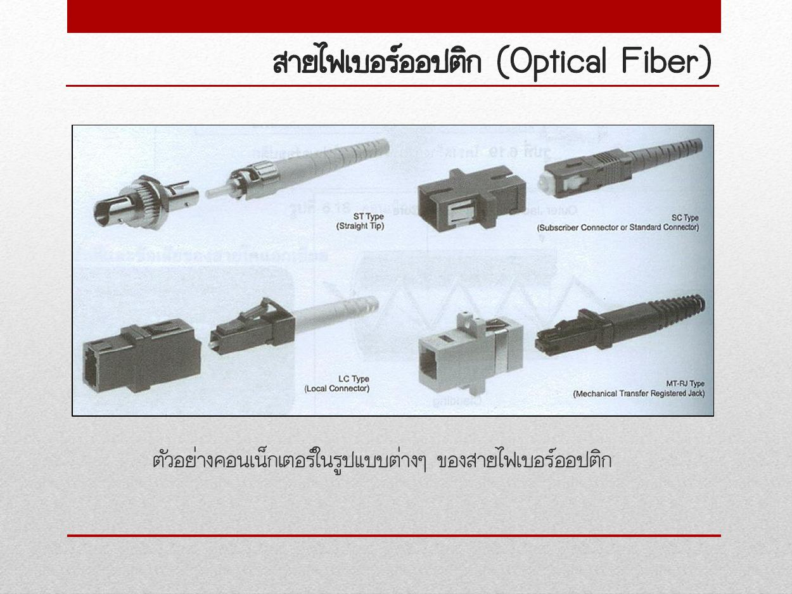
คลิกภาพเพื่อเปิดขยาย
สายไฟเบอร์ออปติก (Optical Fiber) ตัวอย่างคอนเน็กเตอร์ในรูปแบบต่างๆ ของสายไฟเบอร์ออปติก
ทบทวนภาษาไทย: สื่อกลางส่งข้อมูล
กลับสารบัญ ↑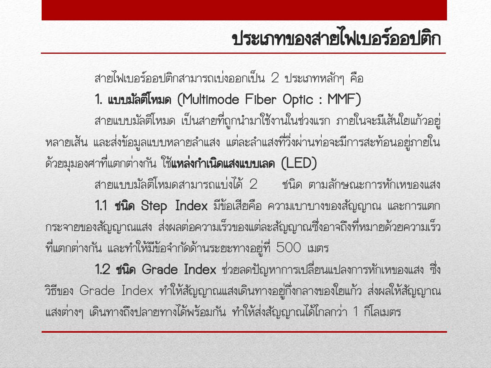
คลิกภาพเพื่อเปิดขยาย
ประเภทของสายไฟเบอร์ออปติก
สายไฟเบอร์ออปติกสามารถเบ่งออกเป็น 2 ประเภทหลักๆ คือ
1. แบบมัลติโหมด (Multimode Fiber Optic : MMF)
สายแบบมัลติโหมด เป็นสายที่ถูกนามาใช้งานในช่วงแรก ภายในจะมีเส้นใยแก้วอยู่
หลายเส้น และส่งข้อมูลแบบหลายลาแสง แต่ละลาแสงที่วิ่งผ่านท่อจะมีการสะท้อนอยู่ภายใน
ด้วยมุมองศาที่แตกต่างกัน ใช้แหล่งกาเนิดแสงแบบเลด (LED)
สายแบบมัลติโหมดสามารถแบ่งได้ 2 ชนิด ตามลักษณะการหักเหของแสง
1.1 ชนิด Step Index มีข้อเสียคือ ความเบาบางของสัญญาณ และการแตก
กระจายของสัญญาณแสง ส่งผลต่อความเร็วของแต่ละสัญญาณซึ่งอาจถึงที่หมายด้วยความเร็ว
ที่แตกต่างกัน และทาให้มีข้อจากัดด้านระยะทางอยู่ที่ 500 เมตร
1.2 ชนิด Grade Index ช่วยลดปัญหาการเปลี่ยนแปลงการหักเหของแสง ซึ่ง
วิธีของ Grade Index ทาให้สัญญาณแสงเดินทางอยู่กึ่งกลางของใยแก้ว ส่งผลให้สัญญาณ
แสงต่างๆ เดินทางถึงปลายทางได้พร้อมกัน ทาให้ส่งสัญญาณได้ไกลกว่า 1 กิโลเมตรทบทวนภาษาไทย: สื่อกลางส่งข้อมูล
กลับสารบัญ ↑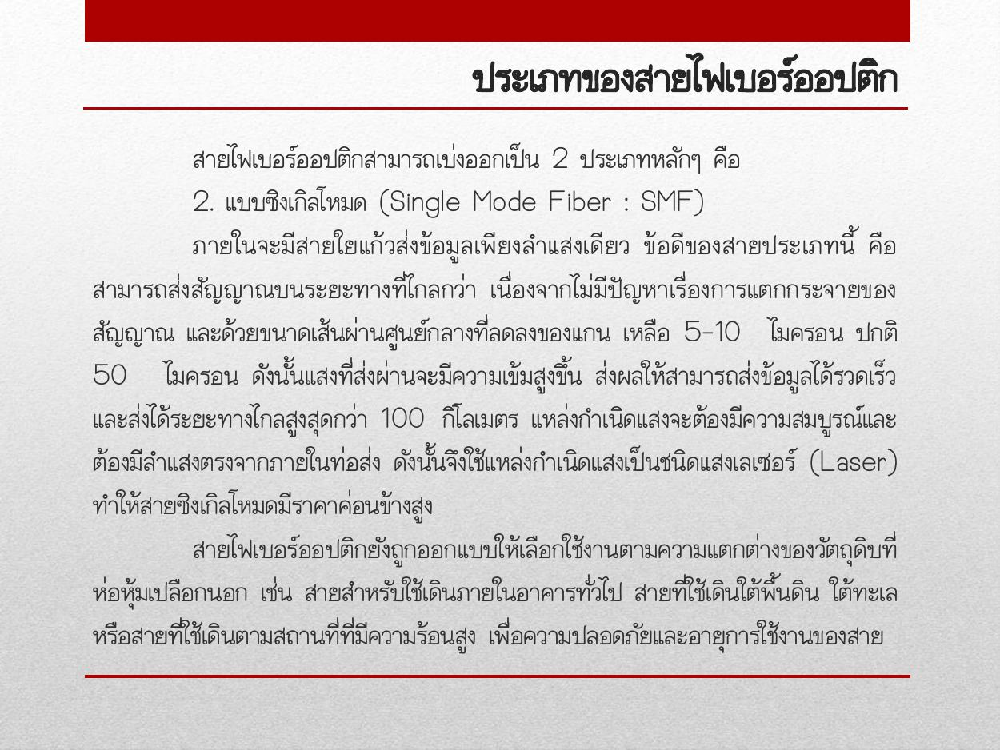
คลิกภาพเพื่อเปิดขยาย
ประเภทของสายไฟเบอร์ออปติก
สายไฟเบอร์ออปติกสามารถเบ่งออกเป็น 2 ประเภทหลักๆ คือ
2. แบบซิงเกิลโหมด (Single Mode Fiber : SMF)
ภายในจะมีส ายใยแก้วส่ งข้อมู ลเพี ย งลาแสงเดีย ว ข้อ ดีของสายประเภทนี้ คื อ
สามารถส่งสัญญาณบนระยะทางที่ไกลกว่า เนื่องจากไม่มีปัญหาเรื่องการแตกกระจายของ
สัญญาณ และด้วยขนาดเส้นผ่านศูนย์กลางที่ลดลงของแกน เหลือ 5-10 ไมครอน ปกติ
50 ไมครอน ดังนั้นแสงที่ส่งผ่านจะมีความเข้มสูงขึ้น ส่งผลให้สามารถส่งข้อมูลได้รวดเร็ว
และส่งได้ระยะทางไกลสูงสุดกว่า 100 กิโลเมตร แหล่งกาเนิดแสงจะต้องมีความสมบูรณ์และ
ต้องมีลาแสงตรงจากภายในท่อส่ง ดังนั้นจึงใช้แหล่งกาเนิดแสงเป็นชนิดแสงเลเซอร์ (Laser)
ทาให้สายซิงเกิลโหมดมีราคาค่อนข้างสูง
สายไฟเบอร์ออปติกยังถูกออกแบบให้เลือกใช้งานตามความแตกต่างของวัตถุดิบที่
ห่อหุ้มเปลือกนอก เช่น สายสาหรับใช้เดินภายในอาคารทั่วไป สายที่ใช้เดินใต้พื้นดิน ใต้ทะเล
หรือสายที่ใช้เดินตามสถานที่ที่มีความร้อนสูง เพื่อความปลอดภัยและอายุการใช้งานของสายทบทวนภาษาไทย: สื่อกลางส่งข้อมูล
กลับสารบัญ ↑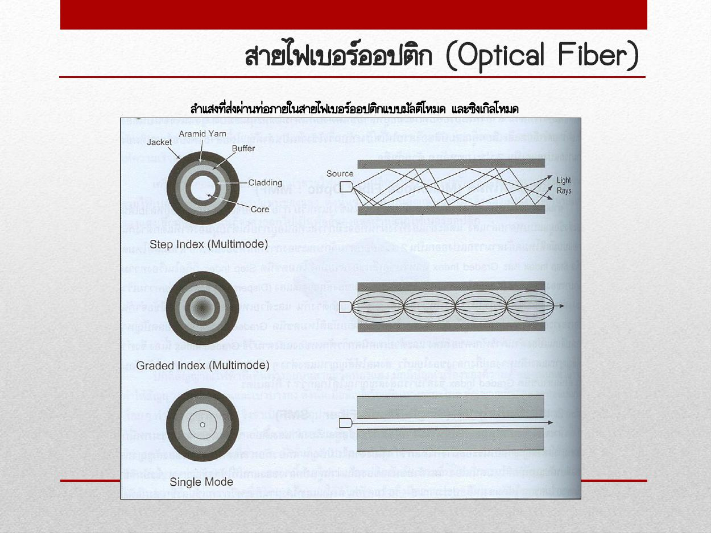
คลิกภาพเพื่อเปิดขยาย
สายไฟเบอร์ออปติก (Optical Fiber) ลาแสงทีส่ ง่ ผ่านท่อภายในสายไฟเบอร์ออปติกแบบมัลติโหมด และซิงเกิลโหมด
ทบทวนภาษาไทย: สื่อกลางส่งข้อมูล
กลับสารบัญ ↑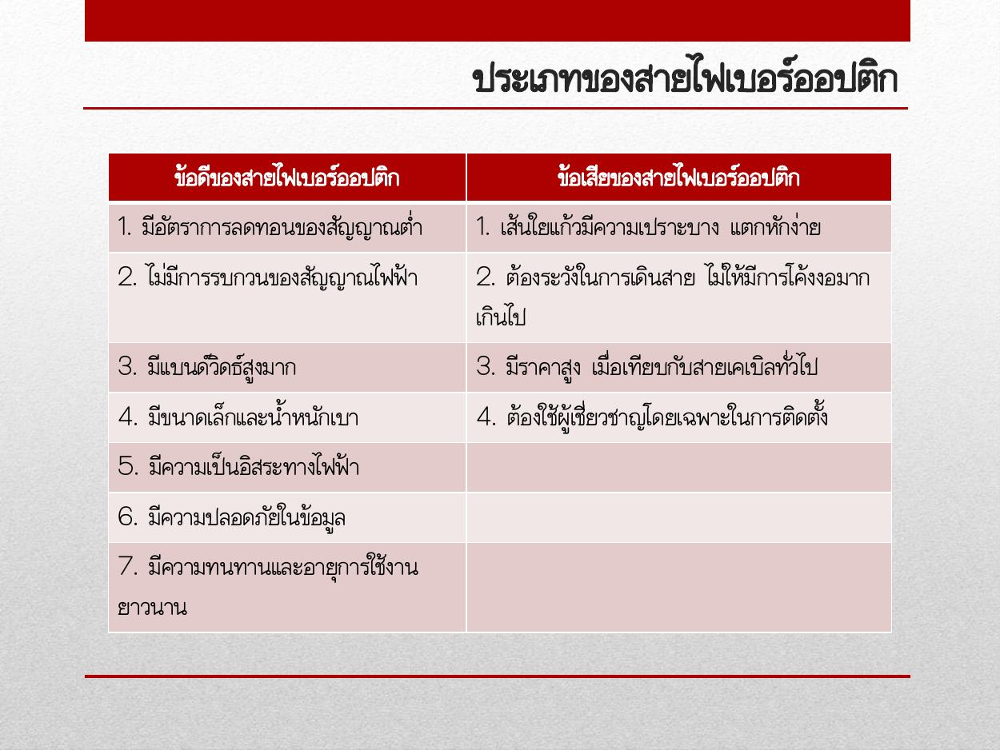
คลิกภาพเพื่อเปิดขยาย
ประเภทของสายไฟเบอร์ออปติก
ข้อดีของสายไฟเบอร์ออปติก ข้อเสียของสายไฟเบอร์ออปติก
1. มีอัตราการลดทอนของสัญญาณต่า 1. เส้นใยแก้วมีความเปราะบาง แตกหักง่าย
2. ไม่มีการรบกวนของสัญญาณไฟฟ้า 2. ต้องระวังในการเดินสาย ไม่ให้มีการโค้งงอมาก
เกินไป
3. มีแบนด์วิดธ์สูงมาก 3. มีราคาสูง เมื่อเทียบกับสายเคเบิลทั่วไป
4. มีขนาดเล็กและน้าหนักเบา 4. ต้องใช้ผู้เชี่ยวชาญโดยเฉพาะในการติดตั้ง
5. มีความเป็นอิสระทางไฟฟ้า
6. มีความปลอดภัยในข้อมูล
7. มีความทนทานและอายุการใช้งาน
ยาวนานทบทวนภาษาไทย: สื่อกลางส่งข้อมูล
กลับสารบัญ ↑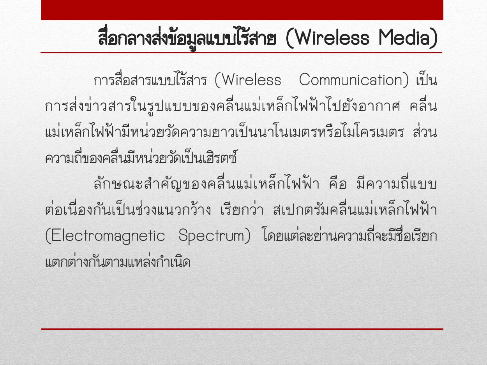
คลิกภาพเพื่อเปิดขยาย
สือ่ กลางส่งข้อมูลแบบไร้สาย (Wireless Media)
การสื่อสารแบบไร้สาร (Wireless Communication) เป็น
การส่ ง ข่ า วสารในรู ป แบบของคลื่ น แม่ เ หล็ ก ไฟฟ้ า ไปยั ง อากาศ คลื่ น
แม่ เ หล็กไฟฟ้ ามี หน่วยวัดความยาวเป็น นาโนเมตรหรื อไมโครเมตร ส่ วน
ความถี่ของคลื่นมีหน่วยวัดเป็นเฮิรตซ์
ลั ก ษณะส าคั ญ ของคลื่ น แม่ เ หล็ ก ไฟฟ้ า คื อ มี ค วามถี่ แ บบ
ต่ อ เนื่ อ งกั น เป็ น ช่ ว งแนวกว้ า ง เรี ย กว่ า สเปกตรั ม คลื่ น แม่ เ หล็ ก ไฟฟ้ า
(Electromagnetic Spectrum) โดยแต่ละย่านความถี่จะมีชื่อเรียก
แตกต่างกันตามแหล่งกาเนิดทบทวนภาษาไทย: สื่อกลางส่งข้อมูล
กลับสารบัญ ↑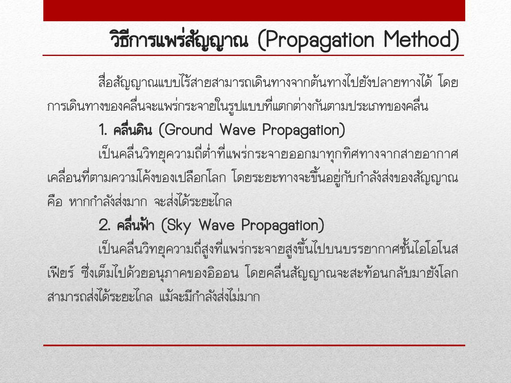
คลิกภาพเพื่อเปิดขยาย
วิธกี ารแพร่สญ
ั ญาณ (Propagation Method)
สื่อสัญญาณแบบไร้สายสามารถเดินทางจากต้นทางไปยังปลายทางได้ โดย
การเดินทางของคลื่นจะแพร่กระจายในรูปแบบที่แตกต่างกันตามประเภทของคลื่น
1. คลื่นดิน (Ground Wave Propagation)
เป็นคลื่นวิทยุความถี่ต่าที่แพร่กระจายออกมาทุกทิศทางจากสายอากาศ
เคลื่อนที่ตามความโค้งของเปลือกโลก โดยระยะทางจะขึ้นอยู่กับกาลังส่งของสัญญาณ
คือ หากกาลังส่งมาก จะส่งได้ระยะไกล
2. คลื่นฟ้า (Sky Wave Propagation)
เป็นคลื่นวิทยุความถี่สูงที่แพร่กระจายสูงขึ้นไปบนบรรยากาศชั้นไอโอโนส
เฟียร์ ซึ่งเต็มไปด้วยอนุภาคของอิออน โดยคลื่นสัญญาณจะสะท้อนกลับมายังโลก
สามารถส่งได้ระยะไกล แม้จะมีกาลังส่งไม่มากทบทวนภาษาไทย: สื่อกลางส่งข้อมูล
กลับสารบัญ ↑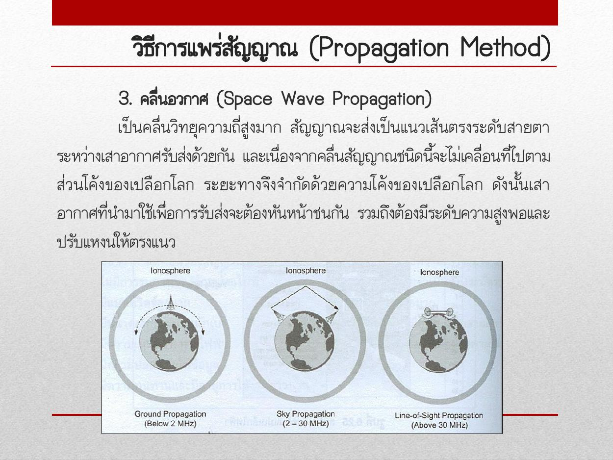
คลิกภาพเพื่อเปิดขยาย
วิธกี ารแพร่สญ
ั ญาณ (Propagation Method)
3. คลื่นอวกาศ (Space Wave Propagation)
เป็นคลื่นวิทยุความถี่สูงมาก สัญญาณจะส่งเป็นแนวเส้นตรงระดับสายตา
ระหว่างเสาอากาศรับส่งด้วยกัน และเนื่องจากคลื่นสัญญาณชนิดนี้จะไม่เคลื่อนที่ไปตาม
ส่วนโค้ งของเปลือกโลก ระยะทางจึงจากัดด้วยความโค้ งของเปลือกโลก ดังนั้น เสา
อากาศที่นามาใช้เพื่อการรับส่งจะต้องหันหน้าชนกัน รวมถึงต้องมีระดับความสูงพอและ
ปรับแหงนให้ตรงแนวทบทวนภาษาไทย: สื่อกลางส่งข้อมูล
กลับสารบัญ ↑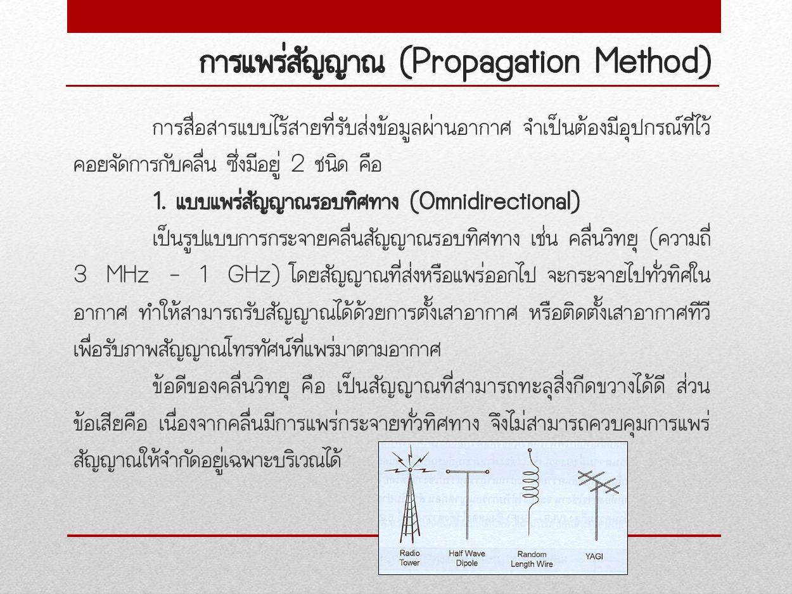
คลิกภาพเพื่อเปิดขยาย
การแพร่สัญญาณ (Propagation Method)
การสื่อสารแบบไร้สายที่รับส่งข้อมูลผ่านอากาศ จาเป็นต้องมีอุปกรณ์ที่ไว้
คอยจัดการกับคลื่น ซึ่งมีอยู่ 2 ชนิด คือ
1. แบบแพร่สัญญาณรอบทิศทาง (Omnidirectional)
เป็นรูปแบบการกระจายคลื่นสัญญาณรอบทิศทาง เช่น คลื่นวิทยุ (ความถี่
3 MHz – 1 GHz) โดยสัญญาณที่ส่งหรือแพร่ออกไป จะกระจายไปทั่วทิศใน
อากาศ ทาให้สามารถรับสัญญาณได้ด้วยการตั้งเสาอากาศ หรือติดตั้งเสาอากาศทีวี
เพื่อรับภาพสัญญาณโทรทัศน์ที่แพร่มาตามอากาศ
ข้อดีของคลื่นวิทยุ คือ เป็นสัญญาณที่สามารถทะลุสิ่งกีดขวางได้ดี ส่วน
ข้อเสียคือ เนื่องจากคลื่นมีการแพร่กระจายทั่วทิศทาง จึงไม่สามารถควบคุมการแพร่
สัญญาณให้จากัดอยู่เฉพาะบริเวณได้ทบทวนภาษาไทย: สื่อกลางส่งข้อมูล
กลับสารบัญ ↑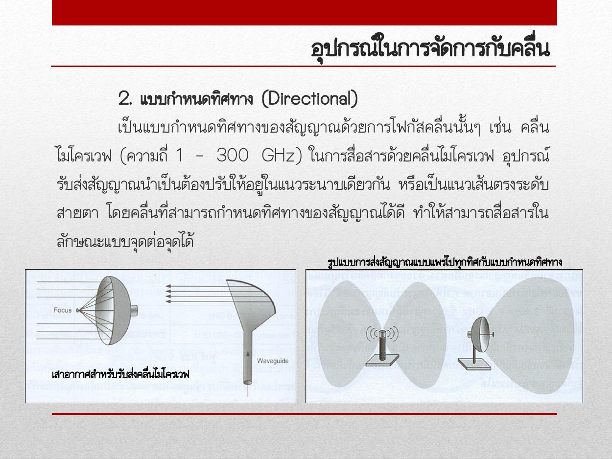
คลิกภาพเพื่อเปิดขยาย
อุปกรณ์ในการจัดการกับคลื่น
2. แบบกาหนดทิศทาง (Directional)
เป็นแบบกาหนดทิศทางของสัญญาณด้วยการโฟกัสคลื่นนั้นๆ เช่น คลื่น
ไมโครเวฟ (ความถี่ 1 – 300 GHz) ในการสื่อสารด้วยคลื่นไมโครเวฟ อุปกรณ์
รับส่งสัญญาณนาเป็นต้องปรับให้อยู่ในแนวระนาบเดียวกัน หรือเป็นแนวเส้นตรงระดับ
สายตา โดยคลื่นที่สามารถกาหนดทิศทางของสัญญาณได้ดี ทาให้สามารถสื่อสารใน
ลักษณะแบบจุดต่อจุดได้
รูปแบบการส่งสัญญาณแบบแพร่ไปทุกทิศกับแบบกาหนดทิศทาง
เสาอากาศสาหรับรับส่งคลืน่ ไมโครเวฟทบทวนภาษาไทย: สื่อกลางส่งข้อมูล
กลับสารบัญ ↑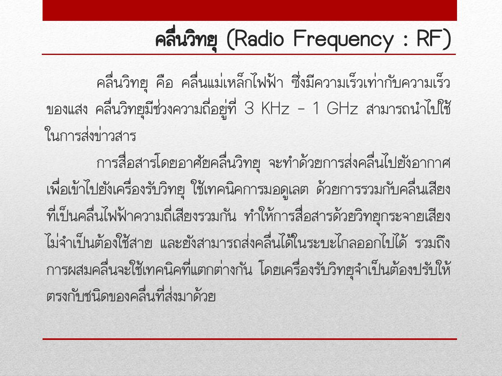
คลิกภาพเพื่อเปิดขยาย
คลื่นวิทยุ (Radio Frequency : RF)
คลื่นวิทยุ คือ คลื่นแม่เหล็กไฟฟ้า ซึ่งมีความเร็วเท่ากับความเร็ว
ของแสง คลื่นวิทยุมีช่วงความถี่อยู่ที่ 3 KHz – 1 GHz สามารถนาไปใช้
ในการส่งข่าวสาร
การสื่อสารโดยอาศัยคลื่นวิทยุ จะทาด้วยการส่งคลื่นไปยังอากาศ
เพื่อเข้าไปยังเครื่องรับวิทยุ ใช้เทคนิคการมอดูเลต ด้วยการรวมกับคลื่นเสียง
ที่เป็นคลื่นไฟฟ้าความถี่เสียงรวมกัน ทาให้การสื่อสารด้วยวิทยุกระจายเสียง
ไม่จาเป็นต้องใช้สาย และยังสามารถส่งคลื่นได้ในระบะไกลออกไปได้ รวมถึง
การผสมคลื่นจะใช้เทคนิคที่แตกต่างกัน โดยเครื่องรับวิทยุจาเป็นต้องปรับให้
ตรงกับชนิดของคลื่นที่ส่งมาด้วยทบทวนภาษาไทย: สื่อกลางส่งข้อมูล
กลับสารบัญ ↑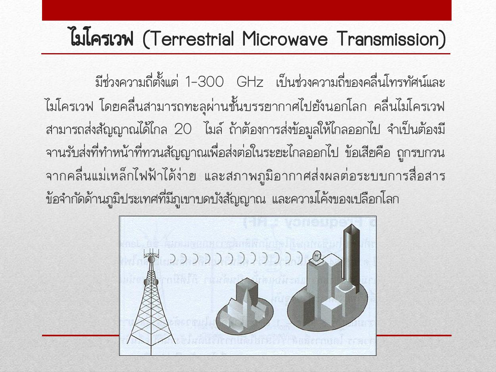
คลิกภาพเพื่อเปิดขยาย
ไมโครเวฟ (Terrestrial Microwave Transmission)
มีช่วงความถี่ตั้งแต่ 1-300 GHz เป็นช่วงความถี่ของคลื่นโทรทัศน์และ
ไมโครเวฟ โดยคลื่นสามารถทะลุผ่านชั้นบรรยากาศไปยังนอกโลก คลื่นไมโครเวฟ
สามารถส่งสัญญาณได้ไกล 20 ไมล์ ถ้าต้องการส่งข้อมูลให้ไกลออกไป จาเป็นต้องมี
จานรับส่งที่ทาหน้าที่ทวนสัญญาณเพื่อส่งต่อในระยะไกลออกไป ข้อเสียคือ ถูกรบกวน
จากคลื่ น แม่ เ หล็ ก ไฟฟ้ า ได้ ง่ า ย และสภาพภู มิ อ ากาศส่ ง ผลต่ อ ระบบการสื่ อ สาร
ข้อจากัดด้านภูมิประเทศที่มีภูเขาบดบังสัญญาณ และความโค้งของเปลือกโลกทบทวนภาษาไทย: สื่อกลางส่งข้อมูล
กลับสารบัญ ↑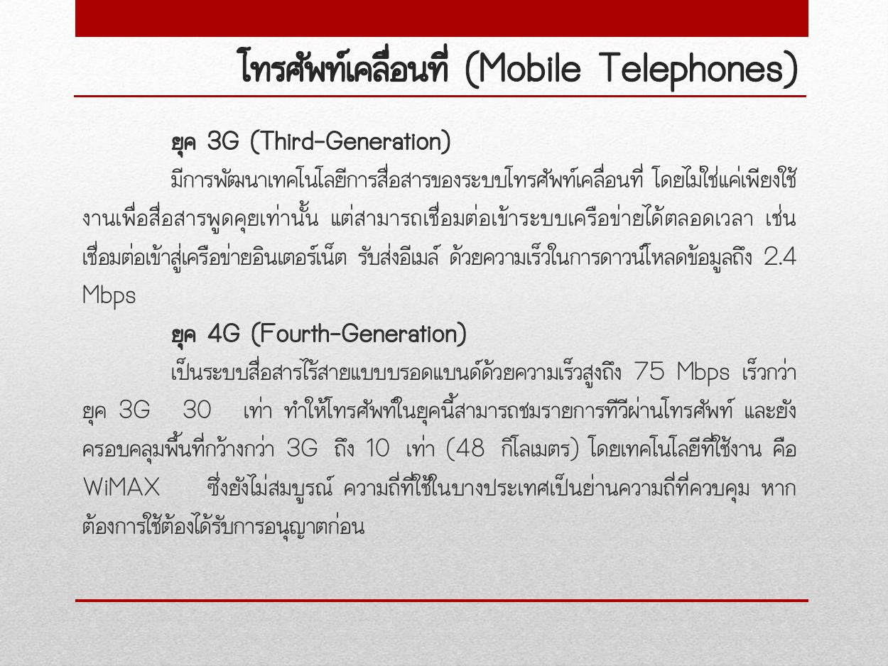
คลิกภาพเพื่อเปิดขยาย
โทรศัพท์เคลือ่ นที่ (Mobile Telephones)
ยุค 3G (Third-Generation)
มีการพัฒนาเทคโนโลยีการสื่อสารของระบบโทรศัพท์เคลื่อนที่ โดยไม่ใช่แค่เพียงใช้
งานเพื่อ สื่อสารพู ดคุยเท่ านั้น แต่ สามารถเชื่อมต่ อเข้าระบบเครือ ข่ายได้ ตลอดเวลา เช่ น
เชื่อมต่อเข้าสู่เครือข่ายอินเตอร์เน็ต รับส่งอีเมล์ ด้วยความเร็วในการดาวน์โหลดข้อมูลถึง 2.4
Mbps
ยุค 4G (Fourth-Generation)
เป็นระบบสื่อสารไร้สายแบบบรอดแบนด์ด้วยความเร็วสูงถึง 75 Mbps เร็วกว่า
ยุค 3G 30 เท่า ทาให้โทรศัพท์ในยุคนี้สามารถชมรายการทีวีผ่านโทรศัพท์ และยัง
ครอบคลุมพื้นที่กว้างกว่า 3G ถึง 10 เท่า (48 กิโลเมตร) โดยเทคโนโลยีที่ใช้งาน คือ
WiMAX ซึ่งยังไม่สมบูรณ์ ความถี่ที่ใช้ในบางประเทศเป็นย่านความถี่ที่ควบคุม หาก
ต้องการใช้ต้องได้รับการอนุญาตก่อนทบทวนภาษาไทย: สื่อกลางส่งข้อมูล
กลับสารบัญ ↑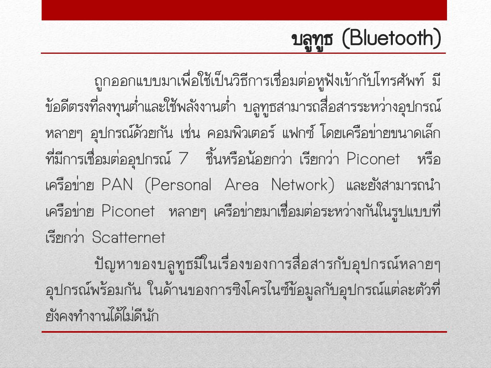
คลิกภาพเพื่อเปิดขยาย
บลูทธู (Bluetooth)
ถูกออกแบบมาเพื่อใช้เป็นวิธีการเชื่อมต่อหูฟังเข้ากับโทรศัพท์ มี
ข้อดีตรงที่ลงทุนต่าและใช้พลังงานต่า บลูทูธสามารถสื่อสารระหว่างอุปกรณ์
หลายๆ อุปกรณ์ด้วยกัน เช่น คอมพิวเตอร์ แฟกซ์ โดยเครือข่ายขนาดเล็ก
ที่มีการเชื่อมต่ออุปกรณ์ 7 ชิ้นหรือน้อยกว่า เรียกว่า Piconet หรือ
เครือข่าย PAN (Personal Area Network) และยังสามารถนา
เครือข่าย Piconet หลายๆ เครือข่ายมาเชื่อมต่อระหว่างกันในรูปแบบที่
เรียกว่า Scatternet
ปั ญ หาของบลู ทู ธ มี ใ นเรื่ อ งของการสื่ อ สารกั บ อุ ป กรณ์ ห ลายๆ
อุปกรณ์พร้อมกัน ในด้านของการซิงโครไนซ์ข้อมูลกับอุปกรณ์แต่ละตัวที่
ยังคงทางานได้ไม่ดีนักทบทวนภาษาไทย: สื่อกลางส่งข้อมูล
กลับสารบัญ ↑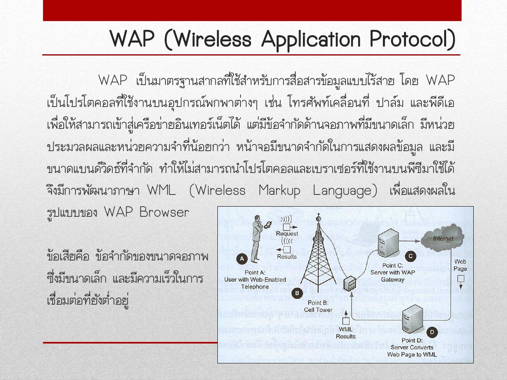
คลิกภาพเพื่อเปิดขยาย
WAP (Wireless Application Protocol)
WAP เป็นมาตรฐานสากลที่ใช้สาหรับการสื่อสารข้อมูลแบบไร้สาย โดย WAP
เป็นโปรโตคอลที่ใช้งานบนอุปกรณ์พกพาต่างๆ เช่น โทรศัพท์เคลื่อนที่ ปาล์ม และพีดีเอ
เพื่อให้สามารถเข้าสู่เครือข่ายอินเทอร์เน็ตได้ แต่มีข้อจากัดด้านจอภาพที่มีขนาดเล็ก มีหน่วย
ประมวลผลและหน่วยความจาที่น้อยกว่า หน้าจอมีขนาดจากัดในการแสดงผลข้อมูล และมี
ขนาดแบนด์วิดธ์ที่จากัด ทาให้ไม่สามารถนาโปรโตคอลและเบราเซอร์ที่ใช้งานบนพีซีมาใช้ได้
จึงมีการพัฒนาภาษา WML (Wireless Markup Language) เพื่อแสดงผลใน
รูปแบบของ WAP Browser
ข้อเสียคือ ข้อจากัดของขนาดจอภาพ
ซึ่งมีขนาดเล็ก และมีความเร็วในการ
เชื่อมต่อที่ยังต่าอยู่ทบทวนภาษาไทย: สื่อกลางส่งข้อมูล
กลับสารบัญ ↑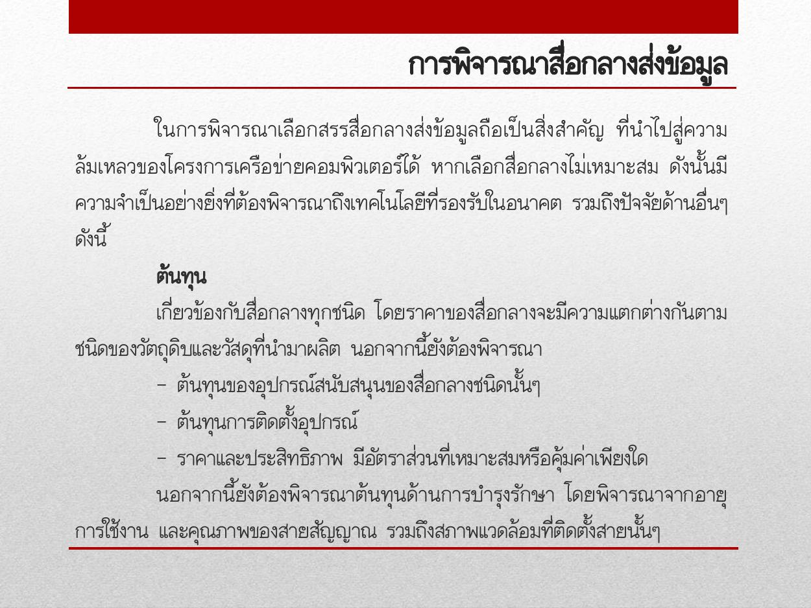
คลิกภาพเพื่อเปิดขยาย
การพิจารณาสือ่ กลางส่งข้อมูล
ในการพิจารณาเลือกสรรสื่อกลางส่งข้อมูล ถือเป็นสิ่ง สาคัญ ที่น าไปสู่ความ
ล้มเหลวของโครงการเครือข่ายคอมพิวเตอร์ได้ หากเลือกสื่อกลางไม่เหมาะสม ดังนั้นมี
ความจาเป็นอย่างยิ่งที่ต้องพิจารณาถึงเทคโนโลยีที่รองรับในอนาคต รวมถึงปัจจัยด้านอื่นๆ
ดังนี้
ต้นทุน
เกี่ยวข้องกับสื่อกลางทุกชนิด โดยราคาของสื่อกลางจะมีความแตกต่างกันตาม
ชนิดของวัตถุดิบและวัสดุที่นามาผลิต นอกจากนี้ยังต้องพิจารณา
- ต้นทุนของอุปกรณ์สนับสนุนของสื่อกลางชนิดนั้นๆ
- ต้นทุนการติดตั้งอุปกรณ์
- ราคาและประสิทธิภาพ มีอัตราส่วนที่เหมาะสมหรือคุ้มค่าเพียงใด
นอกจากนี้ยังต้องพิจารณาต้นทุนด้านการบารุงรักษา โดยพิจารณาจากอายุ
การใช้งาน และคุณภาพของสายสัญญาณ รวมถึงสภาพแวดล้อมที่ติดตั้งสายนั้นๆทบทวนภาษาไทย: สื่อกลางส่งข้อมูล
กลับสารบัญ ↑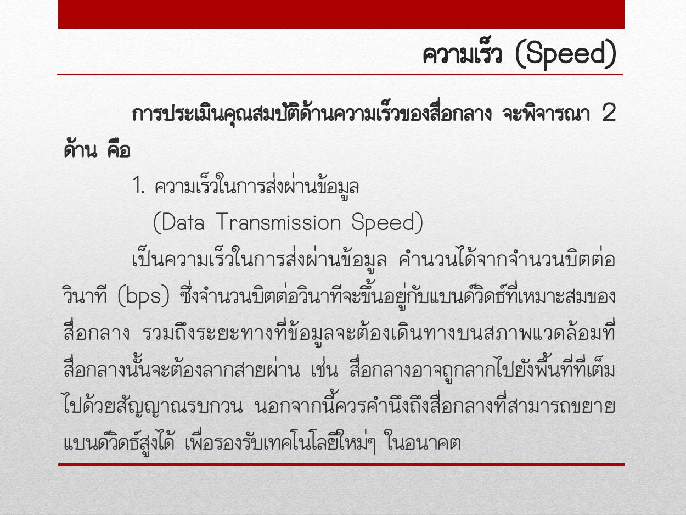
คลิกภาพเพื่อเปิดขยาย
ความเร็ว (Speed)
การประเมินคุณสมบัติด้านความเร็วของสื่อกลาง จะพิจารณา 2
ด้าน คือ
1. ความเร็วในการส่งผ่านข้อมูล
(Data Transmission Speed)
เป็น ความเร็วในการส่ ง ผ่านข้ อ มู ล คานวนได้จากจานวนบิ ตต่อ
วินาที (bps) ซึ่งจานวนบิตต่อวินาทีจะขึ้นอยู่กับแบนด์วิดธ์ที่เหมาะสมของ
สื่ อ กลาง รวมถึ ง ระยะทางที่ ข้ อ มู ล จะต้ อ งเดิ น ทางบนสภาพแวดล้ อ มที่
สื่อกลางนั้นจะต้องลากสายผ่าน เช่น สื่อกลางอาจถูกลากไปยังพื้นที่ที่เต็ม
ไปด้วยสัญญาณรบกวน นอกจากนี้ควรคานึงถึงสื่อกลางที่สามารถขยาย
แบนด์วิดธ์สูงได้ เพื่อรองรับเทคโนโลยีใหม่ๆ ในอนาคตทบทวนภาษาไทย: สื่อกลางส่งข้อมูล
กลับสารบัญ ↑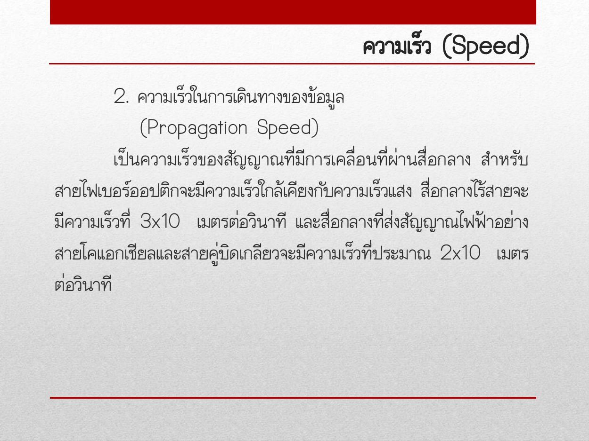
คลิกภาพเพื่อเปิดขยาย
ความเร็ว (Speed)
2. ความเร็วในการเดินทางของข้อมูล
(Propagation Speed)
เป็นความเร็วของสัญญาณที่มีการเคลื่อนที่ผ่านสื่อกลาง สาหรับ
สายไฟเบอร์ออปติกจะมีความเร็วใกล้เคียงกับความเร็วแสง สื่อกลางไร้สายจะ
มีความเร็วที่ 3x10 เมตรต่อวินาที และสื่อกลางที่ส่งสัญญาณไฟฟ้าอย่าง
สายโคแอกเชียลและสายคู่บิดเกลียวจะมีความเร็วที่ประมาณ 2x10 เมตร
ต่อวินาทีทบทวนภาษาไทย: สื่อกลางส่งข้อมูล
กลับสารบัญ ↑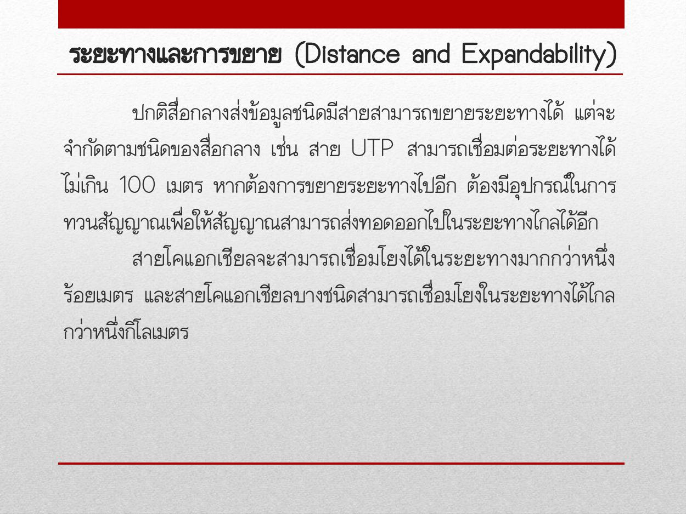
คลิกภาพเพื่อเปิดขยาย
ระยะทางและการขยาย (Distance and Expandability)
ปกติสื่อกลางส่งข้อมูลชนิดมีสายสามารถขยายระยะทางได้ แต่จะ
จากัดตามชนิดของสื่อกลาง เช่น สาย UTP สามารถเชื่อมต่อระยะทางได้
ไม่เกิน 100 เมตร หากต้องการขยายระยะทางไปอีก ต้องมีอุปกรณ์ในการ
ทวนสัญญาณเพื่อให้สัญญาณสามารถส่งทอดออกไปในระยะทางไกลได้อีก
สายโคแอกเชียลจะสามารถเชื่อมโยงได้ในระยะทางมากกว่าหนึ่ง
ร้อยเมตร และสายโคแอกเชียลบางชนิดสามารถเชื่อมโยงในระยะทางได้ไกล
กว่าหนึ่งกิโลเมตรทบทวนภาษาไทย: สื่อกลางส่งข้อมูล
กลับสารบัญ ↑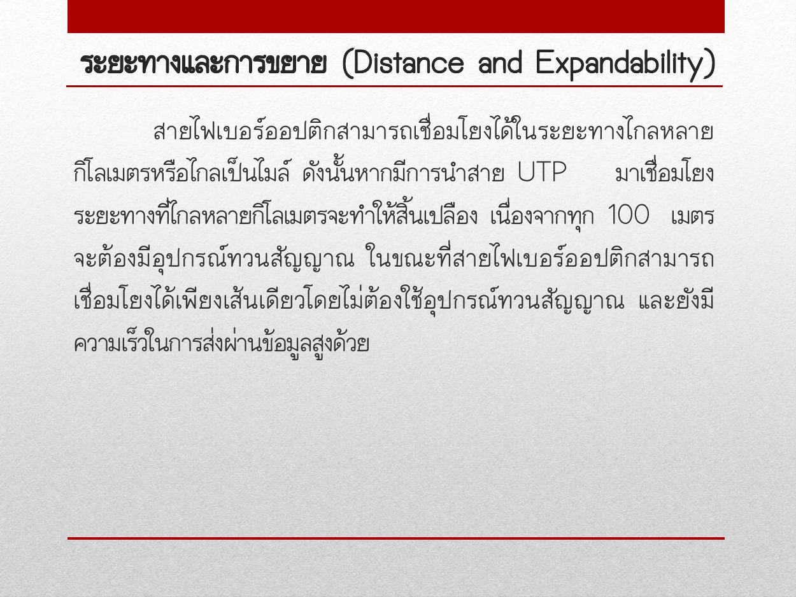
คลิกภาพเพื่อเปิดขยาย
ระยะทางและการขยาย (Distance and Expandability)
สายไฟเบอร์อ อปติ กสามารถเชื่ อ มโยงได้ ในระยะทางไกลหลาย
กิโลเมตรหรือไกลเป็นไมล์ ดังนั้นหากมีการนาสาย UTP มาเชื่อมโยง
ระยะทางที่ไกลหลายกิโลเมตรจะทาให้สิ้นเปลือง เนื่องจากทุก 100 เมตร
จะต้ อ งมี อุ ป กรณ์ ท วนสั ญ ญาณ ในขณะที่ ส ายไฟเบอร์ อ อปติ ก สามารถ
เชื่ อ มโยงได้เ พี ย งเส้ น เดีย วโดยไม่ ต้ อ งใช้ อุ ปกรณ์ ท วนสั ญ ญาณ และยั ง มี
ความเร็วในการส่งผ่านข้อมูลสูงด้วยทบทวนภาษาไทย: สื่อกลางส่งข้อมูล
กลับสารบัญ ↑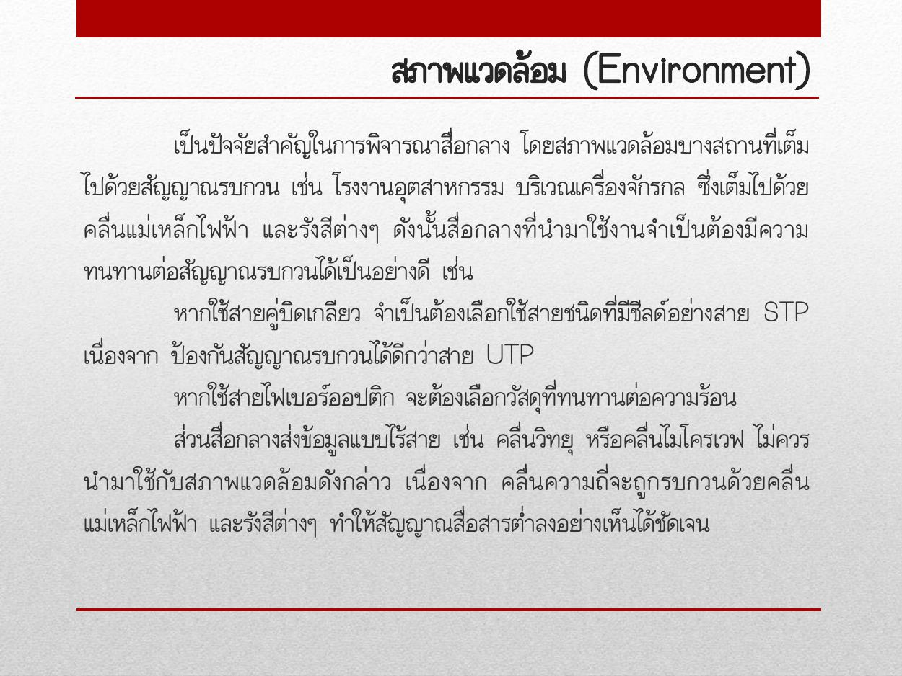
คลิกภาพเพื่อเปิดขยาย
สภาพแวดล้อม (Environment)
เป็นปัจจัยสาคัญในการพิจารณาสื่อกลาง โดยสภาพแวดล้อมบางสถานที่เต็ม
ไปด้วยสัญญาณรบกวน เช่น โรงงานอุตสาหกรรม บริเวณเครื่องจักรกล ซึ่งเต็มไปด้วย
คลื่ นแม่เหล็ กไฟฟ้า และรังสีต่ างๆ ดังนั้ นสื่ อกลางที่น ามาใช้งานจาเป็น ต้องมีความ
ทนทานต่อสัญญาณรบกวนได้เป็นอย่างดี เช่น
หากใช้สายคู่บิดเกลียว จาเป็นต้องเลือกใช้สายชนิดที่มีชีลด์อย่างสาย STP
เนื่องจาก ป้องกันสัญญาณรบกวนได้ดีกว่าสาย UTP
หากใช้สายไฟเบอร์ออปติก จะต้องเลือกวัสดุที่ทนทานต่อความร้อน
ส่วนสื่อกลางส่งข้อมูลแบบไร้สาย เช่น คลื่นวิทยุ หรือคลื่นไมโครเวฟ ไม่ควร
นามาใช้กั บสภาพแวดล้ อ มดัง กล่ าว เนื่อ งจาก คลื่ น ความถี่ จะถูก รบกวนด้ วยคลื่ น
แม่เหล็กไฟฟ้า และรังสีต่างๆ ทาให้สัญญาณสื่อสารต่าลงอย่างเห็นได้ชัดเจนทบทวนภาษาไทย: สื่อกลางส่งข้อมูล
กลับสารบัญ ↑คลิกภาพเพื่อเปิดขยาย
ความปลอดภัย (Security)
ความปลอดภั ย ในการเดิ น ทางของข้ อ มู ล ระหว่ า งการส่ ง จนถึ ง
จุดหมายปลายทาง ถือเป็นสิ่งสาคัญ เนื่องจากอาจมีบุคคลไม่หวังดีพยายาม
ดักฟังสัญญาณหรือลักลอบนาข้อมูลไปใช้งานในทางมิชอบ สาหรับสื่อกลาง
ที่นามาใช้เพื่อการส่งผ่านข้อมูลแต่ละชนิด จะมีความยากง่ายต่อการดักฟัง
ข้อมูลที่แตกต่างกัน โดยสื่อกลางทั้งหมดยกเว้นสายไฟเบอร์ออปติกจะมีการ
ดักฟังสัญญาณได้ง่าย
การสื่ อ สารแบบไร้ ส ายนั้ น สั ญ ญาณอาจถู ก สกั ด กั้ น ได้ ง่ า ย
เนื่องจากคลื่นได้แพร่ไปในอากาศแบบวงกว้าง ดังนั้นในปัจจุบันจึงมีเทคนิค
การเข้ารหัสข้อมูลด้วยซอฟต์แวร์ก่อนส่งสัญญาณไปตามสื่อกลาง ทั้งนี้หาก
ฝ่ายรับไม่มีโปรแกรมถอดรหัส หรือไม่รู้รหัสผ่าน จะไม่สามารถนาข้อมูล
เหล่านั้นไปใช้งานได้ทบทวนภาษาไทย: สื่อกลางส่งข้อมูล
กลับสารบัญ ↑ไม่พบหัวข้อที่ตรงกับคำค้น ลองล้างตัวกรองหรือใช้คำสั้นลง